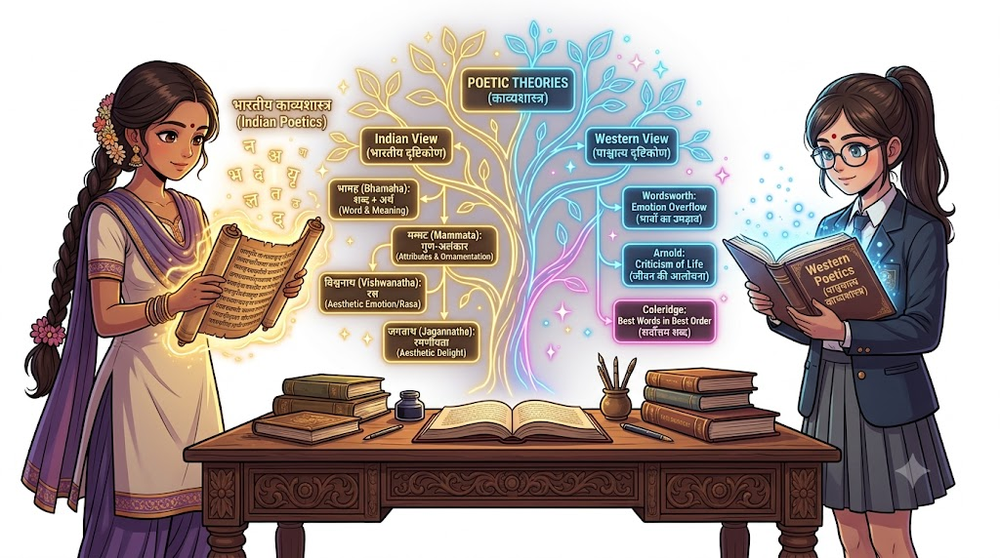

MIC - 6: हिंदी की साहित्यिक विधाएँ : उद्भव और विकास
| Study Space |
Unit 1: साहित्य का स्वरूप एवं पद्य विधाएँ (Introductory Overview)
यूनिट का आसान रोडमैप (हम इस यूनिट में क्या और क्यों पढ़ने वाले हैं?):
इस पहली यूनिट में हम हिंदी साहित्य की बुनियाद को समझने वाले हैं। सोचिए, जब हम कोई किताब, कविता या कहानी पढ़ते हैं, तो हमारे दिल में अलग-अलग भावनाएं (जैसे खुशी, दुख, या देशभक्ति) जागती हैं। आखिर इस "साहित्य" (Literature) की असली परिभाषा क्या है?
- 1.1 साहित्य का स्वरूप: सबसे पहले हम समझेंगे कि हमारे भारतीय विद्वानों (जैसे आचार्य भामह, मम्मट, विश्वनाथ) और पाश्चात्य (Western) विचारकों (जैसे वर्ड्सवर्थ, मैथ्यू अर्नोल्ड) ने साहित्य के क्या-क्या लक्षण और जरूरी तत्त्व (जैसे शब्द, अर्थ, रस, कल्पना, विचार) बताए हैं।
- 1.2 पद्य विधाएँ: इसके बाद हम कविता/काव्य के अलग-अलग रूपों को देखेंगे—
- महाकाव्य (Epic): जैसे रामायण या महाभारत, जो एक बड़े नायक के पूरे जीवन पर आधारित विशाल रचना होती है।
- खंडकाव्य: जो किसी व्यक्ति के जीवन की किसी एक बड़ी घटना पर केंद्रित होता है (जैसे पंचवटी)।
- मुक्तककाव्य: जहाँ हर छंद अपने आप में स्वतंत्र और पूरा होता है (जैसे कबीर के दोहे)।
- चंपूकाव्य: जिसमें गद्य (story/prose) और पद्य (poetry) दोनों मिले-जुले होते हैं।
- स्फुटकाव्य: अलग-अलग विषयों पर रची गई छोटी-छोटी छिटपुट कविताएँ।
यह पूरा यूनिट आपस में इस तरह जुड़ा है: पहले हम जानेंगे कि काव्य या साहित्य बनता कैसे है (उसकी आत्मा और तत्त्व क्या हैं), और फिर हम देखेंगे कि उसके कौन-कौन से ढाँचे (Forms) होते हैं।
Unit 1: साहित्य का स्वरूप एवं पद्य विधाएँ
1.1 साहित्य का स्वरूप : संक्षिप्त परिचय
साहित्य शब्द 'सहित' से बना है, जिसका सीधा सा मतलब होता है—"सबका हित (भला) करने वाला" या "शब्द और अर्थ का आपस में एक साथ मिलकर चलना"।
सरल शब्दों में कहें तो, जो बात सिर्फ किसी एक इंसान के फायदे की न हो, बल्कि समाज के हर व्यक्ति के दिल को छू ले और उसका मार्गदर्शन करे, वही साहित्य है। साहित्य मनुष्य के अनुभवों, भावनाओं और विचारों का एक बहुत ही सुंदर और असरदार रूप होता है।
साहित्य/काव्य को गहराई से समझने के लिए विद्वानों ने इसे दो मुख्य दृष्टिकोणों से देखा है:
- भारतीय दृष्टिकोण (Indian Viewpoint)
- पाश्चात्य दृष्टिकोण (Western Viewpoint)
(A) साहित्य/काव्य के लक्षण (Definitions and Characteristics)
जब हम कहते हैं कि "यह एक अच्छी कविता या साहित्य है", तो उसमें क्या खास होना चाहिए? इसी बात को हमारे प्राचीन और आधुनिक विद्वानों ने अलग-अलग परिभाषाओं (लक्षणों) के जरिए समझाया है।
1. भारतीय मत (Indian Views):
भारतीय आचार्यों ने काव्य/साहित्य की परिभाषा में मुख्य रूप से शब्द, अर्थ, रस और अलंकार को सबसे ज्यादा महत्व दिया है।
आचार्य भामह: "शब्दार्थौ सहितौ काव्यम्"
- आसान मतलब: शब्द (Words) और अर्थ (Meaning) का आपस में सुंदर मेल ही काव्य या साहित्य है। यानी ऐसा न हो कि शब्द कुछ और कहे और उसका भाव कुछ समझ ही न आए।
आचार्य मम्मट: "तद्दोषौ शब्दार्थौ सगुणावनलंकृती पुनः क्वापि"
- आसान मतलब: साहित्य वह है जिसमें कोई कमी (दोष) न हो, जो गुणों से भरा हो, और जिसमें अलंकारों का सुंदर प्रयोग हो।
आचार्य विश्वनाथ (सबसे प्रसिद्ध मत): "वाक्यं रसात्मकं काव्यम्"
- आसान मतलब: रस से भरा हुआ वाक्य ही काव्य/साहित्य है। अगर किसी रचना को पढ़कर आपके मन में कोई भाव (खुशी, करुणा, उत्साह) पैदा नहीं होता, तो वह साहित्य नहीं है।
पंडितराज जगन्नाथ: "रमणीयार्थ प्रतिपादकः शब्दः काव्यम्"
- आसान मतलब: ऐसा शब्द जो सुंदर और आनंददायक अर्थ प्रकट करे, वही काव्य है।
2. पाश्चात्य मत (Western Views):
पश्चिमी (Western) विद्वानों ने साहित्य में भावनाओं (Emotions), कल्पना (Imagination) और जीवन की सच्चाई को ज्यादा महत्व दिया है।
- विलियम वर्ड्सवर्थ (William Wordsworth):
- "Poetry is the spontaneous overflow of powerful feelings."
- आसान मतलब: कविता हमारे अंदर उमड़ती हुई तीव्र भावनाओं का प्राकृतिक बहाव है, जो शांति के समय में याद आती है।
- मैथ्यू अर्नोल्ड (Matthew Arnold):
- "Poetry is at bottom a criticism of life."
- आसान मतलब: साहित्य या काव्य मूल रूप से हमारे जीवन की व्याख्या और उसकी समीक्षा (सच्चाई का आईना) है।
- एस. टी. कॉलरिज (S. T. Coleridge):
- "Poetry is the best words in their best order."
- आसान मतलब: सबसे अच्छे शब्दों को उनके सबसे सही और सटीक क्रम में सजा देना ही कविता है।
(B) साहित्य/काव्य के तत्त्व (Elements of Literature/Poetry)
जैसे एक मजबूत घर बनाने के लिए ईंट, सीमेंट, सरिया और रेत की जरूरत होती है, वैसे ही किसी भी साहित्य या कविता को रचने के लिए 4 मुख्य तत्त्वों (Elements) की जरूरत होती है:
- भाव तत्त्व (Emotional Element / Heart Side):
- यह साहित्य का दिल (Heart) है।
- इसके बिना कोई भी कविता बेजान है। लेखक या कवि अपने मन के सुख-दुख, प्रेम, गुस्सा या करुणा को इसके जरिए पेश करता है। यही पाठक के दिल में 'रस' उत्पन्न करता है।
- बुद्धि तत्त्व (Intellectual / Thought Element):
- यह साहित्य का दिमाग (Brain) है।
- इसमें विचार, संदेश, जीवन के अनुभव और नीतियाँ शामिल होती हैं। केवल बहती हुई भावनाएँ ही काफी नहीं होतीं; रचना में कोई गहरा विचार या सोच भी होनी चाहिए जो पाठक को सोचने पर मजबूर करे।
1.1.1 भेद, लक्षण एवं तत्त्व : भारतीय एवं पाश्चात्य मत
साहित्य या काव्य को गहराई से समझने के लिए विद्वानों ने इसे मुख्य रूप से दो बड़े दृष्टिकोणों में बाँटा है: भारतीय दृष्टिकोण और पाश्चात्य (Western) दृष्टिकोण।
यहाँ हम इनके लक्षण (परिभाषाएँ), तत्त्व (Elements) और भेद (प्रकार) को पूरी डिटेल में और बेहद आसान भाषा में समझेंगे।
(A) काव्य के लक्षण (Definitions & Characteristics)
लक्षण का मतलब है—"किसी रचना में ऐसा क्या खास है जिससे उसे साहित्य या काव्य कहा जाए?"
┌──────────────────────────────────────────┐ │ काव्य / साहित्य के लक्षण │ └────────────────────┬─────────────────────┘ │ ┌───────────────────────┴───────────────────────┐ │ │ ┌───────────┴───────────┐ ┌───────────┴───────────┐ │ भारतीय मत │ │ पाश्चात्य मत │ │ (Indian Viewpoint) │ │ (Western Viewpoint) │ └───────────┬───────────┘ └───────────┬───────────┘ │ │ ┌───────────────┼───────────────┐ ┌───────────────┼───────────────┐ ▼ ▼ ▼ ▼ ▼ ▼ भामह (शब्द+अर्थ) मम्मट (दोषरहित) विश्वनाथ (रस) वर्ड्सवर्थ (उद्रेक) अर्नोल्ड (आलोचना) कॉलरिज (क्रम)
1. भारतीय विद्वानों के अनुसार (Indian Viewpoint)
भारतीय आचार्यों ने मुख्य रूप से शब्द, अर्थ, रस और अलंकार को काव्य की आत्मा माना है:
- 1. आचार्य भामह (कविप्रिया / काव्यालंकार):
"शब्दार्थौ सहितौ काव्यम्"
- विस्तृत अर्थ: शब्द (Words) और अर्थ (Meaning) का आपस में सुंदर, स्वाभाविक और सामंजस्यपूर्ण मेल ही काव्य है। ऐसा न हो कि शब्द कुछ कह रहा हो और अर्थ कुछ और ही निकल रहा हो।
- 2. आचार्य मम्मट (काव्यप्रकाश):
"तद्दोषौ शब्दार्थौ सगुणावनलंकृती पुनः क्वापि"
- विस्तृत अर्थ: साहित्य वह रचना है जो:
- दोषरहित हो (उसमें व्याकरण या अर्थ की कोई गलती न हो)।
- गुणयुक्त हो (पढ़ने में मधुरता, ओज या प्रसाद गुण हो)।
- अलंकारसहित हो (जहाँ संभव हो, सुंदर अलंकारों का प्रयोग हो)।
- 3. आचार्य विश्वनाथ (साहित्यदर्पण) — [सबसे महत्त्वपूर्ण मत]:
"वाक्यं रसात्मकं काव्यम्"
- विस्तृत अर्थ: जिस वाक्य में 'रस' (Emotion/Soul) हो, वही काव्य है। अगर किसी रचना को पढ़कर आपके दिल में करुणा, उत्साह, प्रेम या हास्य जैसा भाव न जागे, तो वह केवल साधारण शब्दों का जमावड़ा है, साहित्य नहीं।
- 4. पंडितराज जगन्नाथ (रसगंगाधर):
"रमणीयार्थ प्रतिपादकः शब्दः काव्यम्"
- विस्तृत अर्थ: ऐसा शब्द जो मन को आनंद (रमणीयता) देने वाले अर्थ का बोध कराए, वही काव्य है।
2. पाश्चात्य विद्वानों के अनुसार (Western Viewpoint)
पश्चिमी विद्वानों ने भावनाओं, कल्पना और जीवन की सच्चाई पर जोर दिया है:
- 1. विलियम वर्ड्सवर्थ (William Wordsworth):
"Poetry is the spontaneous overflow of powerful feelings: it takes its origin from emotion recollected in tranquility."
- सरल व्याख्या: कविता हमारे अंदर उमड़ती हुई तीव्र भावनाओं का सहज और प्राकृतिक बहाव है। जब हम शांत मन से अपने किसी पुराने अनुभव को याद करते हैं, तब कविता का जन्म होता है।
- 2. मैथ्यू अर्नोल्ड (Matthew Arnold):
"Poetry is at bottom a criticism of life."
- सरल व्याख्या: साहित्य मूल रूप से जीवन की समीक्षा (आलोचना) है। यह हमें सिखाता है कि जीवन कैसे जिया जाए और समाज की सच्चाइयां क्या हैं।
- 3. एस. टी. कॉलरिज (S. T. Coleridge):
"Poetry is the best words in their best order."
- सरल व्याख्या: सबसे सही और सुंदर शब्दों को उनके सबसे सटीक क्रम (Order) में सजा देना ही कविता है।
(B) साहित्य / काव्य के 4 अनिवार्य तत्त्व (Elements of Literature)
जैसे इंसानी शरीर के लिए हड्डियाँ, मांस, खून और आत्मा ज़रूरी हैं, वैसे ही किसी भी साहित्य की रचना में 4 मुख्य तत्त्व होते हैं:
┌──────────────────────────────────────┐ │ साहित्य के 4 मुख्य तत्त्व │ └──────────────────┬───────────────────┘ │ ┌──────────────────────┬───────────────┴───────────────┬──────────────────────┐ │ │ │ │ ┌─────┴──────┐ ┌─────┴──────┐ ┌─────┴──────┐ ┌─────┴──────┐ │ भाव तत्त्व │ │ बुद्धि तत्त्व │ │ कल्पना तत्त्व │ │ शैली तत्त्व │ │ (Heart) │ │ (Brain) │ │ (Wings) │ │ (Body) │ └────────────┘ └────────────┘ └────────────┘ └────────────┘
1. भाव तत्त्व (Emotional Element) — [साहित्य का दिल]
- क्या है? कवि या लेखक के मन की भावनाएं (जैसे- दुख, खुशी, प्रेम, क्रोध, करुणा)।
- महत्व: यह साहित्य का सबसे प्रधान (Main) तत्त्व है। इसके बिना कोई भी रचना पाठक के दिल को छू नहीं सकती। यही रचना में 'रस' पैदा करता है।
2. बुद्धि तत्त्व (Intellectual Element) — [साहित्य का दिमाग]
- क्या है? लेखक के विचार, तर्क, नीति, जीवन-दर्शन और सामाजिक संदेश।
- महत्व: केवल बहती हुई भावनाएं ही काफी नहीं हैं। साहित्य में कोई ठोस सोच या विचार होना जरूरी है, ताकि पाठक को सोचने की दिशा मिले।
3. कल्पना तत्त्व (Imagination Element) — [साहित्य के पंख]
- क्या है? लेखक की वह शक्ति जिससे वह अनदेखी चीजों को भी मन में सोचकर शब्दों में उकेर देता है।
- महत्व: यह साधारण बात को अनोखा और सुंदर बना देती है। जैसे किसी साधारण फूल को देखकर कवि पूरे ब्रह्मांड की सुंदरता की कल्पना कर लेता है।
4. शैली / शिल्प तत्त्व (Stylistic Element) — [साहित्य का शरीर]
- क्या है? बात को कहने का तरीका—शब्द-चयन, भाषा (अवधी, ब्रज, खड़ी बोली), छंद, लय और अलंकार।
- महत्व: यह बाहरी ढांचा है। अगर विचार और भावनाएं कितनी भी अच्छी हों, लेकिन भाषा ही बेकार हो, तो रचना असरदार नहीं बनेगी।
(C) साहित्य का वर्गीकरण / भेद (Classification of Literature)
साहित्य को मुख्य रूप से दो अलग-अलग आधारों पर बाँटा जाता है:
┌─────────────────────────────┐ │ साहित्य / काव्य के भेद │ └──────────────┬──────────────┘ │ ┌─────────────────────────┴─────────────────────────┐ │ │ ┌───────────┴───────────┐ ┌───────────┴───────────┐ │ 1. रचना/शैली के आधार पर│ │2. इन्द्रिय बोध के आधार पर │ └───────────┬───────────┘ └───────────┬───────────┘ │ │ ┌──────────────┼──────────────┐ ┌──────────────┴──────────────┐ ▼ ▼ ▼ ▼ ▼ पद्य गद्य चंपू श्रव्य काव्य दृश्य काव्य (Poetry) (Prose) (Mixed) (Audible/Readable) (Visual/Stage)
1. रचना या शैली के आधार पर:
- पद्य (Poetry): जिसमें लय, ताल, छंद और संगीत हो (जैसे- कविता, दोहा, चौपाई)।
- गद्य (Prose): जो सामान्य बातचीत की भाषा में लिखा जाए (जैसे- कहानी, उपन्यास, निबंध)।
- चंपू (Champukavya): जिसमें गद्य और पद्य दोनों का मिला-जुला प्रयोग हो।
2. इन्द्रिय बोध (अनुभव) के आधार पर:
- श्रव्य काव्य (Audible/Readable): जिसे केवल पढ़कर या सुनकर आनंद लिया जाए (जैसे- उपन्यास, कहानी, कविता)।
- दृश्य काव्य (Visual/Performative): जिसे आँखों से देखा और कानों से सुना जा सके (जैसे- नाटक, एकांकी, फिल्म/थिएटर)।
4-Day Exam Quick Revision Table
तत्त्व / विचारक मुख्य बिंदु (Key Concept) आसान ट्रिक (Exam Memory) आचार्य भामह शब्द + अर्थ का मेल शब्द-अर्थ का जोड़ा आचार्य विश्वनाथ रसात्मक वाक्य रस = साहित्य की आत्मा वर्ड्सवर्थ भावनाओं का प्राकृतिक बहाव उमड़ते हुए भाव (Overflow) मैथ्यू अर्नोल्ड जीवन की आलोचना जीवन का आईना भाव तत्त्व संवेदनाएँ व रस दिल (Heart) बुद्धि तत्त्व विचार, संदेश व तर्क दिमाग (Brain) कल्पना तत्त्व अनदेखे का चित्रण पंख (Wings) शैली तत्त्व भाषा, छंद, अलंकार शरीर व कपड़े (Body)

1.2.1 पद्य विधाएँ (Poetic Genres) : सामान्य परिचय
हिंदी साहित्य में पद्य (Poetry) उस रचना-रूप को कहते हैं जो छंद, लय, ताल, तुक (rhyme) और संगीतात्मकता के बंधनों या नियमों से युक्त होती है। पद्य में भावना (Emotion) और कल्पना (Imagination) का सबसे अधिक प्रभाव होता है।
पद्य विधाओं को मुख्य रूप से दो बड़े वर्गों में बाँटा जाता है:
┌─────────────────────────────┐
│ पद्य विधाएँ │
└──────────────┬──────────────┘
│
┌────────────────────────┴────────────────────────┐
│ │
┌───────────┴───────────┐ ┌───────────┴───────────┐
│ 1. प्रबंध काव्य │ │ 2. मुक्तक काव्य │
│ (Narrative Poetry) │ │ (Independent Verse) │
└───────────┬───────────┘ └───────────┬───────────┘
│ │
┌──────────────┴──────────────┐ ┌──────────────┴──────────────┐
▼ ▼ ▼ ▼
महाकाव्य खण्डकाव्य गीति/प्रगीत स्फुट कविताएँ
(Epic Poem) (Sectional Poem) (Lyric Poem) (Misc. Short Poems)
(A) प्रबंध काव्य (Narrative Poetry)
- क्या है? जिसमें कोई धारावाहिक या सिलसिलेवार कहानी (Plot/Storyline) शुरू से अंत तक चलती है। इसमें एक छंद का संबंध दूसरे छंद से जुड़ा होता है।
- मुख्य भेद: महाकाव्य और खण्डकाव्य।
(B) मुक्तक काव्य (Independent / Free Verse)
- क्या है? इसमें कोई लगातार चलने वाली कहानी नहीं होती। हर छंद या पद अपने आप में स्वतंत्र (Complete) होता है। कबीर के दोहे या बिहारी की सतसई इसके सबसे अच्छे उदाहरण हैं।
1.2.1.1 महाकाव्य (Epic Poem / Mahakavya)
(A) महाकाव्य क्या है? (सरल शब्द में)
महाकाव्य पद्य साहित्य का सबसे विशाल, महान और भव्य (Grand) रूप है।
सरल शब्दों में कहें तो, किसी महान नायक (Hero) के जन्म से लेकर उसकी महान उपलब्धियों और पूरे जीवन की कथा को छंदबद्ध तरीके से लिखना ही महाकाव्य है। इसमें केवल एक व्यक्ति की कहानी नहीं होती, बल्कि उस दौर के पूरे समाज, संस्कृति, राजनीति और मानवीय मूल्यों का बहुत गहरा चित्रण होता है।
उदाहरण: गोस्वामी तुलसीदास जी का 'रामचरितमानस' और मलिक मोहम्मद जायसी का 'पद्मावत'।
(B) महाकाव्य के प्रमुख लक्षण / विशेषताएँ (Characteristics of Epic)
भारतीय काव्यशास्त्र के आचार्यों (जैसे भामह, दंडी, और विश्वनाथ) के अनुसार महाकाव्य में निम्नलिखित अनिवार्य लक्षण होने चाहिए:
┌─────────────────────────────────────────┐
│ महाकाव्य के प्रमुख लक्षण │
└────────────────────┬────────────────────┘
│
┌─────────────────┬──────────────────────┼──────────────────────┬─────────────────┐
│ │ │ │ │
┌──────┴──────┐ ┌──────┴──────┐ ┌──────┴──────┐ ┌──────┴──────┐ ┌──────┴──────┐
│ 1. सर्गबद्ध │ │ 2. धीरोदात्त │ │ 3. प्रधान रस │ │ 4. उद्देश्य │ │ 5. युग-चित्र │
│ (8+ Sergas) │ │ नायक │ │ (वीर/शांत/श्रृंगार)│ │(धर्म-अर्थ-मोक्ष) │ │ (Societal) │
└─────────────┘ └─────────────┘ └─────────────┘ └─────────────┘ └─────────────┘
- सर्गबद्धता (Minimum 8 Cantos): महाकाव्य अध्यायों में बँधा होता है, जिन्हें 'सर्ग' (Sarga) कहते हैं। एक मानक महाकाव्य में कम से कम 8 या उससे अधिक सर्ग होने चाहिए।
- धीरोदात्त नायक (Noble Hero): महाकाव्य का मुख्य पात्र (Hero) कोई साधारण इंसान नहीं होता। वह धीरोदात्त होता है—यानी अत्यंत धैर्यवान, वीर, गंभीर, क्षमाशील, और उच्च चरित्र वाला (जैसे: श्री राम)।
- कथावस्तु का विस्तार (Grand Narrative): इसकी कहानी ऐतिहासिक, पौराणिक या प्रसिद्ध होती है, जिसमें जीवन के संपूर्ण पहलुओं (जन्म, विवाह, युद्ध, प्राकृतिक सौंदर्य, नगर वर्णन) का विस्तार से वर्णन होता है।
- प्रधान रस (Main Emotion): महाकाव्य में तीन मुख्य रसों में से कोई एक रस प्रधान (Dominant) होता है:
- वीर रस (उदा. युद्ध और वीरता)
- शांत रस (उदा. भक्ति और वैराग्य)
- शृंगार रस (उदा. प्रेम और सौंदर्य)
(बाकी अन्य सभी रस गौण/सहायक के रूप में आते हैं।)
- उद्देश्य (Moral Purpose): महाकाव्य का उद्देश्य जीवन के चार पुरुषार्थों—धर्म, अर्थ, काम और मोक्ष की प्राप्ति का संदेश देना होता है।
(C) हिंदी महाकाव्यों का उद्भव और विकास (Origin & Development)
हिंदी महाकाव्य के विकास क्रम को हम मुख्य रूप से चार कालखंडों (Eras) में बाँटकर समझते हैं:
┌───────────────────────────────────────────────────────────────────────────┐
│ हिंदी महाकाव्य का ऐतिहासिक विकास क्रम │
└──────────────────────────────────────┬────────────────────────────────────┘
│
┌────────────────────────────────┼────────────────────────────────┐
│ │ │
┌───────┴───────┐ ┌───────┴───────┐ ┌───────┴───────┐
│ 1. आदिकाल │ │ 2. भक्ति काल │ │ 3. रीति काल │
│(Veergatha Era)│ │(Bhakti Era) │ │ (Riti Era) │
└───────┬───────┘ └───────┬───────┘ └───────┬───────┘
│ │ │
पृथ्वीराज रासो रामचरितमानस रामचंद्रिका
(चंदबरदाई) (तुलसीदास) (केशवदास)
│
┌────────────────┴───────────────┐
│ 4. आधुनिक काल │
│ (Modern Era) │
└────────────────┬───────────────┘
│
┌────────────────┼────────────────┐
▼ ▼ ▼
प्रियप्रवास कामायनी उर्वशी
(हरिऔध) (प्रसाद) (दिनकर)
1. आदिकाल (Early Era - वीरगाथा काल):
- विशेषता: युद्धों का सीधा वर्णन, राजाओं की प्रशंसा और वीरता।
- प्रथम महाकाव्य: चंदबरदाईकृत 'पृथ्वीराज रासो' को हिंदी का पहला महाकाव्य माना जाता है।
2. भक्ति काल (Golden Era of Bhakti):
- विशेषता: लोक-कल्याण, नैतिक मूल्य, भक्ति और समाज सुधार।
- प्रमुख महाकाव्य:
- रामचरितमानस (गोस्वामी तुलसीदास) — अवधी भाषा में रचित, भारतीय संस्कृति का महानतम महाकाव्य।
- पद्मावत (मलिक मोहम्मद जायसी) — सूफी प्रेमाख्यानक महाकाव्य।
3. रीति काल (Riti Era):
- विशेषता: कलात्मकता, अलंकार-प्रदर्शन और चमत्कार प्रदर्शन।
- प्रमुख महाकाव्य: केशवदासकृत 'रामचंद्रिका' (इसे छंदों का अजायबघर भी कहा जाता है)।
4. आधुनिक काल (Modern Era):
- विशेषता: अंधविश्वासों से हटकर मानव-कल्याण, मनोविज्ञान, राष्ट्रप्रेम और खड़ी बोली का प्रयोग।
- प्रमुख महाकाव्य:
- प्रियप्रवास (अयोध्यासिंह उपाध्याय 'हरिऔध') — खड़ी बोली हिंदी का पहला महाकाव्य।
- कामायनी (जयशंकर प्रसाद) — छायावादी युग का महान मनोवैज्ञानिक महाकाव्य (मनु और श्रद्धा की कथा)।
- उर्वशी (रामधारी सिंह 'दिनकर') — काम और अध्यात्म का द्वंद्व।
- साकेत (मैथिलीशरण गुप्त) — उर्मिला के त्याग पर केंद्रित महाकाव्य।
Quick Revision Summary (4-Day Exam Flash-Card)
| महाकाव्य (Epic) | कवि / लेखक | काल (Era) | मुख्य विशेषता (Key Feature) |
|---|---|---|---|
| पृथ्वीराज रासो | चंदबरदाई | आदिकाल | हिंदी का पहला महाकाव्य (वीर रस) |
| रामचरितमानस | तुलसीदास | भक्तिकाल | लोक-नायक राम का चरित्र (अवधी भाषा) |
| पद्मावत | जायसी | भक्तिकाल | सूफी प्रेम-परंपरा का महाकाव्य |
| प्रियप्रवास | हरिऔध | आधुनिक काल | खड़ी बोली का पहला महाकाव्य |
| कामायनी | जयशंकर प्रसाद | आधुनिक काल | छायावाद का श्रेष्ठ महाकाव्य (15 सर्ग) |
| साकेत | मैथिलीशरण गुप्त | आधुनिक काल | उपेक्षित उर्मिला को न्याय देने वाली रचना |
1.2.1.2 खण्डकाव्य (Khandakavya / Sectional Poem)
(A) खण्डकाव्य क्या है? (सरल भाषा में)
खण्डकाव्य पद्य (Poetry) का वह रूप है जिसमें किसी व्यक्ति के पूरे जीवन की कहानी न होकर, उसके जीवन की किसी एक मुख्य घटना, पहलू या भाग (Segment) का वर्णन किया जाता है।
इसे समझने के लिए एक आसान उदाहरण लेते हैं:
अगर महाकाव्य किसी इंसान की पूरी लाइफ पर बनी 3 घंटे की फिल्म है, तो खण्डकाव्य उस लाइफ के केवल एक स्पेशल सीन/इवेंट पर बनी एक छोटी शॉर्ट-फिल्म है!
- उद्देश्य: जीवन के पूरे चरित्र को दिखाने के बजाय, किसी एक विशेष प्रसंग के ज़रिए एक गहरा संदेश देना।
- उदाहरण: मैथिलीशरण गुप्त जी का 'पंचवटी' (जिसमें केवल श्री राम के 14 वर्ष के वनवास के दौरान पंचवटी में बिताए गए समय का सुंदर वर्णन है, पूरे जीवन का नहीं)।
(B) खण्डकाव्य की मुख्य विशेषताएँ (Characteristics)
खण्डकाव्य में निम्नलिखित 4-5 मुख्य बातें होती हैं:
┌──────────────────────────────────────────────┐
│ खण्डकाव्य की विशेषताएँ │
└──────────────────────┬───────────────────────┘
│
┌───────────────────┬─────────────────┴─────────────────┬───────────────────┐
▼ ▼ ▼ ▼
जीवन का एक अंश सीमित पात्र (Characters) कम सर्ग/अध्याय एक ही मुख्य भाव/रस
(Single Life Segment) (Main Hero & Few Support) (Short & Compact) (Focused Emotion)
- एकदेशी रूप (Single Segment): इसमें जीवन के किसी एक ही प्रसंग या घटना को चुना जाता है।
- सीमित पात्र (Few Characters): इसमें बहुत सारे कैरेक्टर्स नहीं होते। मुख्य नायक और 1-2 सहायक पात्र ही होते हैं।
- संक्षिप्त आकार (Compact Structure): महाकाव्य की तरह इसमें 8 या उससे अधिक सर्ग होना ज़रूरी नहीं है। यह छोटा और सीधा होता है।
- एक ही मुख्य रस (Single Dominant Emotion): पूरी रचना में एक मुख्य भावना (जैसे केवल करुणा, केवल प्रेम या केवल वीरता) शुरू से अंत तक बनी रहती है।
(C) महाकाव्य और खण्डकाव्य में अंतर (Super Important for Exams)
परीक्षा में इन दोनों के बीच का अंतर अक्सर पूछा जाता है। इसे इस टेबल से चुटकियों में याद करें:
| आधार (Basis) | महाकाव्य (Mahakavya) | खण्डकाव्य (Khandakavya) |
|---|---|---|
| जीवन का विस्तार | सम्पूर्ण जीवन का वर्णन (Full Life) | जीवन के किसी एक अंश/घटना का वर्णन (One Episode) |
| आकार (Size) | विशाल और बड़ा (कम से कम 8 सर्ग) | छोटा और सीमित (Short & Compact) |
| पात्र (Characters) | अनेक पात्र और मुख्य-सहायक कई कहानियाँ | बहुत कम पात्र, केवल एक ही मुख्य कथा |
| रस (Emotions) | कई रस (मुख्य रस के साथ अन्य रस भी) | मुख्य रूप से एक ही रस का प्रभाव |
| उदाहरण (Example) | रामचरितमानस (तुलसीदास) | पंचवटी, जयद्रथ वध (मैथिलीशरण गुप्त) |

(D) हिंदी खण्डकाव्य का उद्भव और विकास (Origin & Development)
हिंदी में खण्डकाव्य की परंपरा काफी पुरानी है, जिसे हम तीन प्रमुख चरणों में समझ सकते हैं:
┌─────────────────────────────────────────────────────────────────────────────────┐
│ हिंदी खण्डकाव्य का ऐतिहासिक सफर │
└────────────────────────────────────────┬────────────────────────────────────────┘
│
┌─────────────────────────────────┼─────────────────────────────────┐
▼ ▼ ▼
1. आदिकाल व मध्यकाल 2. द्विवेदी युग (स्वर्ण काल) 3. छायावाद व आधुनिक काल
(Early & Medieval Era) (Rise of Khandakavya) (Modern Emotional Era)
│ │ │
संदेश रासक (अब्दुल रहमान) पंचवटी, जयद्रथ वध रश्मिरथी (दिनकर)
पद्मावत के छोटे प्रसंग (मैथिलीशरण गुप्त) संशय की एक रात (नरेश मेहता)- आदिकाल और मध्यकाल (प्रारंभिक रूप):
- अब्दुल रहमान का 'संदेश रासक' हिंदी का पहला खण्डकाव्य माना जाता है (यह एक विरह-काव्य है)।
- भक्तिकाल और रीतिकाल में कवियों का ध्यान महाकाव्य पर ज्यादा था, लेकिन फिर भी कुछ छोटी कथात्मक रचनाएँ लिखी गईं।
- द्विवेदी युग (खण्डकाव्य का स्वर्णिम समय):
- इस दौर में खण्डकाव्य अपनी पूरी रंगत में आया।
- मैथिलीशरण गुप्त जी को खण्डकाव्य का राजा माना जाता है। उन्होंने 'जयद्रथ वध', 'पंचवटी', और 'अनघ' जैसे प्रसिद्ध खण्डकाव्य लिखे।
- छायावाद एवं आधुनिक काल (विचारों और मनोविज्ञान का समावेश):
- रामधारी सिंह 'दिनकर' का 'रश्मिरथी' (कर्ण के जीवन की मुख्य घटनाओं और उसके त्याग पर आधारित सबसे लोकप्रिय खण्डकाव्य)।
- नरेश मेहता का 'संशय की एक रात' (युद्ध से पहले श्री राम के मन में उठे संशय की केवल एक रात की कहानी)।
- धर्मवीर भारती का 'कनुप्रिया' (राधा और कृष्ण के प्रेम व युद्ध के सम्बंध पर आधारित)।
Quick Revision Flash-Card (4-Day Exam Formula)
- परिभाषा: जीवन का एक खंड (अंश) = खण्डकाव्य।
- किंग ऑफ खण्डकाव्य: मैथिलीशरण गुप्त (पंचवटी, जयद्रथ वध)।
- मोस्ट पॉपुलर खण्डकाव्य: दिनकर जी का रश्मिरथी (कर्ण का चरित्र)।
- एग्जाम ट्रिक: महाकाव्य = पूरी लाइफ स्टोरी | खण्डकाव्य = लाइफ का एक खास चैप्टर!
1.2.1.3 मुक्तककाव्य (Independent / Free Verse Poem)
(A) मुक्तक काव्य क्या है? (सरल भाषा में)
मुक्तक काव्य पद्य (Poetry) का वह रूप है जिसमें लिखा गया हर छंद या पद अपने आप में पूरी तरह स्वतंत्र (Free/Independent) होता है।
इसका पहले लिखे गए या बाद में लिखे जाने वाले किसी भी छंद से कोई संबंध (Plot or Link) नहीं होता। हर एक दोहा या छंद अपने आप में एक पूरी कविता होता है और एक पूरा भाव व्यक्त करता है।
इसे समझने के लिए एक आसान उदाहरण लेते हैं:
• प्रबंध काव्य (महाकाव्य/खण्डकाव्य): एक लंबी टीवी सीरीज या उपन्यास की तरह है, जहाँ अगर आप बीच का एक एपिसोड छोड़ दें, तो आगे की कहानी समझ नहीं आएगी।
• मुक्तक काव्य: छोटी-छोटी रील (Reels) या तस्वीरों के एलबम जैसा है—हर तस्वीर का अपना अलग मज़ा और अलग अर्थ होता है!
- शाब्दिक अर्थ: 'मुक्तक' शब्द 'मुक्त' से बना है, जिसका मतलब है—"जो पूर्वापर (आगे-पीछे के) संबंधों से पूरी तरह आजाद हो।"
- आचार्य रामचंद्र शुक्ल का प्रसिद्ध कथन: "यदि प्रबंध काव्य एक विस्तृत वनस्थली है, तो मुक्तक एक चुना हुआ गुलदस्ता है।"
- उदाहरण: कबीर दास जी के दोहे, बिहारी जी की 'सतसई', और रहीम के नीति-वचन।
(B) मुक्तक काव्य की मुख्य विशेषताएँ (Characteristics)
मुक्तक काव्य को आसानी से पहचानने की 4 मुख्य बातें:
┌──────────────────────────────────────────────┐
│ मुक्तक काव्य की विशेषताएँ │
└──────────────────────┬───────────────────────┘
│
┌───────────────────┬─────────────────┴─────────────────┬───────────────────┐
▼ ▼ ▼ ▼
पूर्वापर संबंध से मुक्त पूर्ण स्वतंत्रता (Independent) तीव्र प्रभाव (Instant) संक्षिप्तता व कसावट (Compact)
(No Serial Storyline) (Every Verse is Complete) (Hits Heart Directly) (Maximum Meaning in Minimum Words)- पूर्वापर निरपेक्षता (No Story Continuity): इसमें आगे या पीछे के पदों से कहानी का कोई जुड़ाव नहीं होता। आप किताब का कोई भी पन्ना खोलकर पढ़ें, आपको पूरा अर्थ तुरंत समझ आएगा।
- आत्म-पूर्णता (Self-Completeness): हर दोहा या छंद अपने आप में एक पूरा अर्थ और अनुभव देता है।
- सघन अनुभूति एवं तीव्र प्रभाव (Instant Impact): इसमें कवि के पास लंबी कहानी सुनाने का मौका नहीं होता, इसलिए वह अपनी बात सीधे पाठक के दिल पर चोट करने वाले अंदाज़ में कहता है।
- गागर में सागर (Maximum Meaning in Few Words): कम से कम शब्दों में बड़ी से बड़ी बात कह देना मुक्तक काव्य की सबसे बड़ी ताकत है (जैसे बिहारी के दोहे)।
(C) मुक्तक काव्य के मुख्य प्रकार (Types of Muktaka)
मुक्तक काव्य को मुख्य रूप से दो कोणों या रूपों में बाँटा जाता है:
┌─────────────────────────────┐
│ मुक्तक काव्य के प्रकार │
└──────────────┬──────────────┘
│
┌─────────────────────────┴─────────────────────────┐
│ │
┌───────────┴───────────┐ ┌───────────┴───────────┐
│ 1. पाठ्य मुक्तक │ │ 2. गेय मुक्तक │
│(Readable / Recitable) │ │ (Lyric / Musical) │
└───────────┬───────────┘ └───────────┬───────────┘
│ │
विचार, नीति और सुक्ति पर बल संगीत, लय और तीव्र भावना पर बल
(कबीर, बिहारी, रहीम के दोहे) (सूरदास, मीराबाई, महादेवी के पद)
- पाठ्य मुक्तक (Recitable Muktaka):
- जिसे पढ़ा या सस्वर बोला जाता है।
- इसमें नीति, विचार, उपदेश, या किसी अनुभूति का सुंदर चित्रण होता है।
- उदाहरण: कबीर, तुलसी (दोहावली), रहीम, और बिहारी के दोहे।
- गेय मुक्तक (Musical / Lyric Muktaka):
- जिसे संगीतात्मकता के साथ गाया जा सके (इसे 'गीति काव्य' भी कहते हैं)।
- इसमें लय, ताल, और अत्यधिक भावुकता (Emotions) होती है।
- उदाहरण: सूरदास के कृष्ण-भक्ति पद, मीराबाई के भजन, और महादेवी वर्मा के गीत।
(D) हिंदी मुक्तक काव्य का उद्भव और विकास (Origin & Development)
हिंदी साहित्य में मुक्तक काव्य की परंपरा बहुत समृद्ध रही है:
┌─────────────────────────────────────────────────────────────────────────────────┐
│ हिंदी मुक्तक काव्य का ऐतिहासिक सफर │
└────────────────────────────────────────┬────────────────────────────────────────┘
│
┌─────────────────────────────────┼─────────────────────────────────┐
▼ ▼ ▼
1. आदिकाल व भक्तिकाल 2. रीतिकाल (स्वर्ण युग) 3. आधुनिक काल
(Early & Bhakti Eras) (Peak of Muktaka) (Modern & Free Verse)
│ │ │
कबीर व रहीम के नीति दोहे बिहारी की 'सतसई' छायावादी गीत (महादेवी)
सूर व मीरा के गेय पद घनानंद के प्रेमाकुल मुक्तक अज्ञेय व आधुनिक अतुकांत कविताएँ- आदिकाल एवं भक्तिकाल (शुरुआती दौर):
- सिद्धों और नाथों की वाणियों से मुक्तक की शुरुआत हुई।
- भक्तिकाल में कबीर, रहीम और वृंद ने नीति और उपदेश के पाठ्य मुक्तक लिखे।
- वहीं सूरदास, मीराबाई और नंददास ने कृष्ण-भक्ति में डूबकर गेय मुक्तक (पद) रचे।
- रीतिकाल (मुक्तक काव्य का स्वर्ण युग):
- रीतिकाल में राजाओं के दरबार में बड़ी-बड़ी कथाएँ सुनने का समय नहीं था, इसलिए कवियों ने एक से बढ़कर एक मुक्तक रचे।
- कवि बिहारी (बिहारी सतसई): इन्होंने 700 से अधिक दोहों में शृंगार, नीति और भक्ति का ऐसा बेजोड़ संगम प्रस्तुत किया कि कहा गया—"सतसैया के दोहरे, ज्यों नावक के तीर। देखन में छोटे लगैं, घाव करैं गंभीर।"
- घनानंद, मतिराम, और पद्माकर ने भी उत्कृष्ट मुक्तक लिखे।
- आधुनिक काल (छायावाद से नयी कविता तक):
- आधुनिक काल में जयशंकर प्रसाद, महादेवी वर्मा, और हरिवंश राय बच्चन ('मधुशाला') ने नए-नए रूपों में मुक्तक रचे।
- अतुकांत व छंदमुक्त कविताएँ: आधुनिक युग में छंदों के नियमों को तोड़कर 'मुक्त छंद' (Free Verse) की कविताएँ लिखी जाने लगीं (जैसे सूर्यकांत त्रिपाठी 'निराला' की रचनाएँ)।
Quick Revision Flash-Card (4-Day Exam Formula)
- एक लाइन परिभाषा: जो रचना किसी लगातार चलने वाली कहानी से बंधी न हो, हर पद स्वतंत्र हो = मुक्तक काव्य।
- शुकुल जी का फेमस कोट: प्रबंध काव्य विस्तृत वनस्थली है, तो मुक्तक चुना हुआ गुलदस्ता।
- दो मुख्य भेद: पाठ्य मुक्तक (पढ़ने/बोलने योग्य) और गेय मुक्तक (गाने योग्य पद/गीत)।
- किंग ऑफ रीतिकाल मुक्तक: कवि बिहारी (बिहारी सतसई)।
- एग्जाम ट्रिक: प्रबंध = वेब सीरीज (जुड़ी हुई कहानी) | मुक्तक = स्टैंड अलोन शॉर्ट रील्स (हर दोहा अपने आप में कम्प्लीट)!
1.2.1.4 चम्पूकाव्य (Champukavya / Mixed Prose-Poetry)
(A) चम्पू काव्य क्या है? (सरल भाषा में)
चम्पू काव्य साहित्य का वह अनोखा रूप है जिसमें गद्य (Prose - कहानी/बातचीत) और पद्य (Poetry - कविता/छंद) दोनों को एक साथ मिलाकर लिखा जाता है।
इसे समझने के लिए एक आसान उदाहरण लेते हैं:
• गद्य (Prose): साधारण बोलचाल या कहानी की भाषा (बिना छंद/संगीत के)।
• पद्य (Poetry): ताल, छंद और संगीत वाली कविता।
• चम्पू काव्य: जब किसी कहानी को सुनाते समय, बीच-बीच में जहाँ भावनाएँ तीव्र हों वहाँ कविताएँ जोड़ दी जाएँ और जहाँ विवरण देना हो वहाँ साधारण गद्य लिखा जाए, तो उस मिश्रित शैली को चम्पू कहते हैं!
- संस्कृत साहित्य से उत्पत्ति: संस्कृत काव्यशास्त्र में चम्पू की परिभाषा देते हुए कहा गया है—"गद्य-पद्यमयं काव्यं चम्पूरित्यभिधीयते" (अर्थात् गद्य और पद्य से मिश्रित काव्य ही चम्पू है)।
- उद्देश्य: गद्य से कहानी को तेज़ी और स्पष्टता से आगे बढ़ाना, और पद्य से पाठक के दिल में रस और भावनाएँ पैदा करना।
(B) चम्पू काव्य की मुख्य विशेषताएँ (Characteristics)
चम्पू काव्य को पहचानने की 4 मुख्य बातें:
- मिश्रित शैली (Hybrid Style): इसमें गद्य और पद्य एक-दूसरे के पूरक (complementary) बनकर चलते हैं।
- सजीवता और प्रवाह (Liveliness): केवल गद्य पढ़ने से जो नीरसता आ सकती है, उसे पद्य का संगीत दूर कर देता है।
- भावात्मक संतुलन (Emotional Balance): जहाँ घटना या तथ्य समझाना हो वहाँ गद्य का प्रयोग होता है, और जहाँ प्रेम, दुख या वीरता का भाव दिखाना हो वहाँ पद्य (कविता) का प्रयोग होता है।
- नाटकीयता (Drama Element): चम्पू काव्य में एक तरह का नाटकीय आनंद मिलता है, क्योंकि यह पढ़ने में बहुत रोचक लगता है।
(C) हिंदी चम्पू काव्य का उद्भव और विकास (Origin & Development)
हिंदी साहित्य में चम्पू काव्य की परंपरा संस्कृत से आई, लेकिन हिंदी में इसका विकास तीन प्रमुख चरणों में हुआ:
┌─────────────────────────────────────────────────────────────────────────────────┐
│ हिंदी चम्पू काव्य का विकास क्रम │
└────────────────────────────────────────┬────────────────────────────────────────┘
│
┌─────────────────────────────────┼─────────────────────────────────┐
▼ ▼ ▼
1. आदिकाल (शुरुआत) 2. आधुनिक काल (मैथिलीशरण गुप्त) 3. छायावाद (प्रसाद व अन्य)
(Ancient Roots) (Dwivedi Era Mastery) (Modern Dramatic Style)
│ │ │
'राउर वेल' (रोडा कवि) 'यशोधरा' (राष्ट्रकवि गुप्त जी) 'उर्वशी' (जयशंकर प्रसाद)
(हिंदी का पहला चम्पू काव्य) (हिंदी चम्पू का सर्वश्रेष्ठ रूप) (प्रारंभिक चम्पू रचना)
- आदिकाल (प्रारंभिक चरण):
- रोडा कवि द्वारा रचित 'राउर वेल' (10वीं शताब्दी) को हिंदी साहित्य का पहला चम्पू काव्य माना जाता है।
- यह एक शिलांकित कृति (पत्थर पर खुदी हुई) है, जिसमें गद्य और पद्य दोनों में नायिका के नख-शिख (सुंदरता) का वर्णन है।
- द्विवेदी युग एवं आधुनिक काल (स्वर्ण काल):
- राष्ट्रकवि मैथिलीशरण गुप्त जी ने हिंदी में चम्पू काव्य को नई ऊँचाइयों पर पहुँचाया।
- 'यशोधरा' (1932): गौतम बुद्ध के गृह-त्याग के बाद उनकी पत्नी यशोधरा के दुःखों और स्वाभिमान पर आधारित यह रचना हिंदी साहित्य का सबसे प्रसिद्ध और महान चम्पू काव्य है। (इसमें प्रसिद्ध पंक्ति है—"सखि, वे मुझसे कहकर जाते...")
- गुप्त जी की एक और रचना 'अनघ' भी चम्पू शैली में है।
- छायावाद और आधुनिक काल:
- जयशंकर प्रसाद की प्रारंभिक रचना 'उर्वशी' चम्पू काव्य की श्रेणी में आती है।
- माखनलाल चतुर्वेदी का 'साहित्य देवता' भी गद्य-काव्य/चम्पू शैली का सुंदर उदाहरण प्रस्तुत करता है।
Quick Revision Flash-Card (4-Day Exam Formula)
| बिंदु (Concept) | मुख्य बात (Key Takeaway) |
|---|---|
| चम्पू काव्य क्या है? | गद्य (Prose) + पद्य (Poetry) का मिश्रित रूप |
| हिंदी का पहला चम्पू काव्य | 'राउर वेल' (कवि रोडा - 10वीं शताब्दी) |
| हिंदी का सबसे प्रसिद्ध चम्पू काव्य | 'यशोधरा' (मैथिलीशरण गुप्त) |
| एग्जाम ट्रिक | कहानी (Prose) + गाना (Poetry) = चम्पू काव्य! |
1.2.1.5 स्फुटकाव्य (Miscellaneous Poems)
(A) स्फुट काव्य क्या है? (सरल भाषा में)
स्फुट काव्य पद्य (Poetry) का वह रूप है जिसमें किसी एक निश्चित विषय, लंबी कहानी या विचार पर न लिखकर अलग-अलग बिखरे हुए विषयों (Miscellaneous topics) पर छोटी-छोटी कविताएँ, पद या दोहे लिखे जाते हैं।
इसे समझने के लिए एक आसान उदाहरण लेते हैं:
- शाब्दिक अर्थ: 'स्फुट' शब्द का मतलब होता है—"बिखरा हुआ", "अलग-अलग" या "छुटपुट" (Scattered/Miscellaneous)।
- आसान मिसाल: जैसे किसी म्यूजिक एलबम में हर गाना बिल्कुल अलग टॉपिक पर होता है (कोई देश भक्ति पर, तो कोई दोस्ती पर), ठीक वैसे ही स्फुट काव्य अलग-अलग प्रसंगों, विषयों और भावनाओं पर रची गई छिटपुट कविताओं का संग्रह होता है।
मुख्य बात: इसमें न तो महाकाव्य की तरह कोई लंबी कथा होती है और न ही किसी एक विषय पर लगातार लिखा गया ग्रंथ। कवि जब भी किसी अलग-अलग घटना, प्रकृति के दृश्य या सामाजिक परिस्थिति से प्रभावित होता है, तो उस पर एक छोटी स्फुट कविता लिख देता है।
(B) स्फुट काव्य की मुख्य विशेषताएँ (Characteristics)
स्फुट काव्य को आसानी से समझने की 4 मुख्य बातें:
- विषय-वैविध्य (Variety of Topics): इसमें किसी एक विषय का बंधन नहीं होता। कवि एक ही किताब में प्रकृति, प्रेम, भक्ति, देश-प्रेम और सामाजिक बुराइयों पर अलग-अलग स्फुट कविताएँ लिख सकता है।
- संक्षिप्तता (Short Length): ये रचनाएँ आकार में बहुत छोटी और संक्षिप्त होती हैं।
- तात्कालिकता (Spontaneous Emotion): कवि के मन में किसी विशेष क्षण या घटना को देखकर जो तुरंत भावना उठती है, वही स्फुट काव्य बनकर ढल जाती है।
- स्वतंत्र अस्तित्व (Independent Existence): हर स्फुट कविता अपने आप में पूर्ण होती है, इसका किसी दूसरी स्फुट कविता से कोई लेना-देना नहीं होता।
(C) मुक्तक काव्य और स्फुट काव्य में सूक्ष्म अंतर (Important Exam Distinction)
कई छात्र मुक्तक और स्फुट को एक ही समझ लेते हैं, लेकिन इनमें एक बारीक अंतर होता है:
| आधार (Basis) | मुक्तक काव्य (Muktaka) | स्फुट काव्य (Sphuta Kavya) |
|---|---|---|
| संरचना (Structure) | एक ही छंद/दोहे में बात पूरी होती है (जैसे 1 दोहा)। | यह 4-10 पंक्तियों की एक छोटी पूरी कविता हो सकती है। |
| विषय का संकलन | एक ही विषय पर कई मुक्तक हो सकते हैं (जैसे 'बिहारी सतसई' में शृंगार)। | इसमें पूरी तरह अलग-अलग और बिखरे हुए विषयों का संग्रह होता है। |
| स्वरूप | दोहा, चौपाई या पद का एक-एक छंद। | छिटपुट कविताओं का संकलन (Scattered Poems Collection)। |
(D) हिंदी स्फुट काव्य का इतिहास और विकास (Origin & Development)
हिंदी साहित्य के हर काल में कवियों ने स्फुट रचनाएँ लिखी हैं:
┌─────────────────────────────────────────────────────────────────────────────────┐
│ हिंदी स्फुट काव्य का विकास क्रम │
└────────────────────────────────────────┬────────────────────────────────────────┘
│
┌─────────────────────────────────┼─────────────────────────────────┐
▼ ▼ ▼
1. भक्तिकाल व रीतिकाल 2. भारतेंदु व द्विवेदी युग 3. आधुनिक काल
(Early Misc. Verses) (Social & National Poems) (Modern Short Poetry)
│ │ │
सूर, मीरा, कबीर के स्फुट पद भारतेंदु हरिश्चंद्र की स्फुट कविताएँ माखनलाल, सुभद्रा कुमारी चौहान
रसखान के स्फुट सवैये मैथिलीशरण गुप्त के छिटपुट गीत ('पुष्प की अभिलाषा' जैसी स्फुट कविताएँ)
- भक्तिकाल एवं रीतिकाल:
- भक्तिकाल के कवियों (सूरदास, मीराबाई, कबीर) ने मुख्य ग्रंथों के अलावा समय-समय पर अनेक स्फुट पद रचे।
- रीतिकाल में रसखान के स्फुट सवैये (जैसे—"मानुष हों तो वही रसखानि...") बहुत प्रसिद्ध हुए।
- भारतेंदु एवं द्विवेदी युग (राष्ट्रीय और सामाजिक चेतना):
- भारतेंदु हरिश्चंद्र ने देश की दशा, रीति-रिवाजों और सामाजिक कुरीतियों पर अनेक स्फुट कविताएँ लिखीं।
- मैथिलीशरण गुप्त और रामचरित उपाध्याय ने अलग-अलग समसामयिक विषयों पर छोटी-छोटी स्फुट कविताएँ रचीं।
- छायावाद और आधुनिक काल (देशभक्ति व प्रकृति):
- माखनलाल चतुर्वेदी की प्रसिद्ध कविता 'पुष्प की अभिलाषा' ("चाह नहीं मैं सुरबाला के गहनों में गूँथा जाऊँ...") स्फुट काव्य का एक बेहतरीन उदाहरण है।
- सुभद्रा कुमारी चौहान की 'झाँसी की रानी' जैसी देशभक्ति की स्फुट कविताएँ जनता में बहुत लोकप्रिय हुईं।
Quick Revision Flash-Card (4-Day Exam Formula)
- स्फुट का अर्थ: बिखरा हुआ / छिटपुट (Miscellaneous)।
- परिभाषा: अलग-अलग विषयों पर रची गई छोटी और स्वतंत्र कविताओं का संग्रह = स्फुट काव्य।
- बेस्ट एग्जांपल: माखनलाल चतुर्वेदी की 'पुष्प की अभिलाषा'।
- एग्जाम ट्रिक: स्फुट = मिक्स वेज (Mix-Veg)! अलग-अलग विषयों का अलग-अलग मज़ा!
Unit 2: गीत, कविता एवं गद्य विधाएँ
2.1 काव्य/कविता के विविध रूप
यूनिट 1 में हमने काव्य के बड़े ढाँचों (जैसे महाकाव्य, खण्डकाव्य, मुक्तक) को पढ़ा। अब यूनिट 2 के इस भाग में हम कविता के उन रूपों को समझेंगे जो सीधे इंसानी दिल की गहराइयों, संगीत और आधुनिक सोच से जुड़े हैं।
┌─────────────────────────────┐
│ काव्य के विविध रूप │
└──────────────┬──────────────┘
│
┌───────────────────┬────────────────┴───────────────────┬───────────────────┐
▼ ▼ ▼ ▼
2.1.1 गीति काव्य 2.1.2 प्रगीत 2.1.3 नयी कविता 2.1.4 नवगीत
(Lyric Poetry) (Prageet / Lyric) (Modern Poetry) (New Lyric)2.1.1 गीति काव्य (Lyric Poetry)
(A) गीति काव्य क्या है? (सरल भाषा में)
गीति काव्य कविता का वह अत्यंत सरस और मधुर रूप है जिसे गाया जा सके (Musical/Singable) और जिसमें कवि अपनी व्यक्तिगत भावनाओं (Personal Emotions) को संगीत व लय के साथ व्यक्त करता है।
इसे समझने के लिए एक आसान उदाहरण लेते हैं:
• प्रबंध काव्य (महाकाव्य/खण्डकाव्य): दूसरों की कहानी (जैसे राम या कृष्ण की कथा) सुनाता है।
• गीति काव्य: कवि अपने स्वयं के दिल का हाल (अपनी खुशी, अपना दर्द, अपना प्रेम या भक्ति) गाकर सुनाता है।
- अंग्रेजी में: इसे 'Lyric' कहा जाता है, जो ग्रीक शब्द Lyre (एक प्रकार का बाजा/वीणा) से बना है। यानी वह कविता जो वीणा की धुन पर गाई जाती थी।
- प्रमुख पहचान: आत्मपरकता (Self-expression), संगीतात्मकता (Music) और तीव्र भावुकता (Deep Emotions)।
(B) गीति काव्य की मुख्य विशेषताएँ (Characteristics)
गीति काव्य को पहचानने के 5 मुख्य आधार:
- आत्मानुभूति / वैयक्तिकता (Subjectivity): इसमें कवि समाज या दूसरों की बात करने के बजाय अपने निजी सुख-दुख, प्रेम या विरह की अनुभूति व्यक्त करता है।
- संगीतात्मकता व गेयता (Musicaness): इसमें आंतरिक लय, ताल और छंद का ऐसा सुंदर मेल होता है कि इसे आसानी से किसी धुन में गाया जा सकता है।
- एकल भाव की तीव्रता (Single Intense Emotion): इसमें एक समय में केवल एक ही तीव्र भाव (जैसे केवल विरह या केवल आनंद) की अभिव्यक्ति होती है।
- संक्षिप्तता (Brevity): गीति काव्य आकार में छोटा होता है। यह महाकाव्य की तरह लंबा नहीं होता।
- कोमलकांत पदावली (Soft & Melodious Language): इसकी भाषा बहुत ही मधुर, कोमल और अलंकारों से सजी होती है।
(C) हिंदी गीति काव्य का उद्भव और विकास (Origin & Development)
हिंदी साहित्य में गीति काव्य की परंपरा आदिकाल से लेकर आधुनिक काल तक बहुत समृद्ध रही है:
┌─────────────────────────────────────────────────────────────────────────────────┐
│ हिंदी गीति काव्य का विकास क्रम │
└────────────────────────────────────────┬────────────────────────────────────────┘
│
┌─────────────────────────────────┼─────────────────────────────────┐
▼ ▼ ▼
1. आदिकाल व भक्तिकाल 2. रीतिकाल 3. आधुनिक काल
(Spiritual & Bhakti Songs) (Romantic Lyrics) (Chhayavad & Modern Lyrics)
│ │ │
विद्यापति के 'पद' घनानंद के प्रेमाकुल गीत महादेवी वर्मा (गीति-कोकिला)
सूरदास व मीराबाई के कृष्ण-भजन देव व मतिराम के सवैये जयशंकर प्रसाद ('लहर', 'आंसु')- आदिकाल (शुरुआती बीज):
- विद्यापति: इन्हें हिंदी गीति-काव्य का जनक/प्रवर्तक माना जाता है। इनकी 'पदावली' के गीत राधा-कृष्ण के प्रेम और संगीत से भरपूर हैं।
- भक्तिकाल (स्वर्ण युग):
- भक्तिकाल में गेय पदों (गीति काव्य) की बाढ़ आ गई।
- सूरदास: वात्सल्य और शृंगार के पदों के सम्राट।
- मीराबाई: विरह और कृष्ण-भक्ति के गीतों की मर्मस्पर्शी गायिका।
- तुलसीदास: इन्होंने भी 'विनय पत्रिका' और 'गीतावली' में उत्कृष्ट गीति काव्य रचा।
- रीतिकाल:
- घनानंद: इन्होंने अपनी प्रेयसी सुजान के प्रेम में बहुत ही भावुक और मर्मस्पर्शी गीति मुक्तक लिखे।
- आधुनिक काल (छायावाद - गीति काव्य का चरमोत्कर्ष):
- छायावादी युग में गीति काव्य अपनी सबसे सुंदर स्थिति में पहुँचा:
- महादेवी वर्मा: इन्हें हिंदी साहित्य की 'आधुनिक मीरा' या गीति-काव्य की कोकिला कहा जाता है। (उदा. "प्रियतम को पहचान लूँ...")
- जयशंकर प्रसाद: 'झरना', 'आँसू' और 'लहर' में आधुनिक गीति काव्य की श्रेष्ठ मिसाल दी।
- सूर्यकांत त्रिपाठी 'निराला': 'गीतिका' और 'सरोज स्मृति' (हिंदी का सर्वश्रेष्ठ शोक-गीत / Elegy)।
- हरिवंश राय बच्चन: 'हालावाद' के प्रवर्तक, जिन्होंने 'मधुशाला' और 'निशा निमंत्रण' में व्यक्तिगत अनुभूतियों के अद्भुत गीत रचे।
Quick Revision Flash-Card (4-Day Exam Formula)
- गीति काव्य की मुख्य पहचान: जो गाया जा सके (गेय) + कवि का अपना व्यक्तिगत भाव (आत्मानुभूति)।
- हिंदी गीति-काव्य के जनक: विद्यापति (पदावली)।
- आधुनिक युग की गीति-सम्राज्ञी: महादेवी वर्मा।
- हिंदी का श्रेष्ठ शोक-गीत (Elegy): निराला कृत 'सरोज स्मृति'।
- एग्जाम ट्रिक: प्रबंध काव्य = कहानी सुनाना | गीति काव्य = दिल का हाल गाना!
2.1.2 प्रगीत (Prageet / Lyric Poem)
(A) प्रगीत क्या है? (सरल भाषा में)
प्रगीत (Prageet) आधुनिक गीति काव्य का ही एक रूप है। यह सामान्य लोकगीत या पारंपरिक गीत से थोड़ा अलग होता है।
सरल शब्दों में कहें तो, जब कवि अपने किसी व्यक्तिगत विचार, गंभीर अनुभव या गहन अनुभूति को बहुत ही संक्षिप्त, कसावट भरे और संगीतात्मक रूप में प्रस्तुत करता है, तो उसे 'प्रगीत' कहते हैं।
इसे समझने के लिए एक आसान तुलना देखें:
- सामान्य गीत (General Song): इसमें लय, तुकबंदी और दोहराव (जैसे मुखड़ा और अंतरा) ज्यादा होता है, जिसे आसानी से गुनगुनाया जा सकता है।
- प्रगीत (Prageet): इसमें गीत की मिठास तो होती है, लेकिन इसमें गंभीर सोच (Intellectual Depth), कसावट और संक्षिप्तता ज्यादा होती है। इसमें केवल मनोरंजन नहीं, बल्कि कवि के अंतर्मन का कोई गहरा सत्य छिपा होता है।
परिभाषा: प्रगीत वह छोटी, आत्मपरक (subjective) और संगीतात्मक कविता है जिसमें कवि अपने किसी एक ही गहन भाव या अनुभूति को बिना किसी लंबी कहानी के सीधे व्यक्त करता है।
(B) प्रगीत की मुख्य विशेषताएँ (Characteristics)
प्रगीत को आसानी से पहचानने की 5 मुख्य बातें:

- आत्मपरकता (Subjectivity): इसमें 'मैं' (कवि का अपना निजी अनुभव) मुख्य होता है। कवि बाहरी दुनिया का वर्णन करने के बजाय अपने मन की बात कहता है।
- संक्षिप्तता (Brevity): प्रगीत कभी बहुत लंबा नहीं होता। यह आकार में छोटा और कसा हुआ होता है ताकि भाव की तीव्रता बनी रहे।
- एकाग्रता और तीव्रता (Single Focal Point): इसमें किसी एक ही विचार या भावना पर पूरा ध्यान केंद्रित होता है।
- आंतरिक लय (Internal Rhythm): भले ही यह पारंपरिक छंदों के कड़े नियमों में न बँधा हो, लेकिन इसमें एक आंतरिक संगीतात्मकता और लय होती है।
- बौद्धिक गहनता (Intellectual Depth): आधुनिक प्रगीतों में केवल भावना ही नहीं, बल्कि एक सूक्ष्म विचार या दर्शन (Philosophy) भी जुड़ा होता है।
(C) प्रगीत के मुख्य प्रकार (Types of Prageet)
विषय और शैली के आधार पर प्रगीत मुख्य रूप से तीन प्रकार के होते हैं:
┌─────────────────────────────┐
│ प्रगीत के मुख्य प्रकार │
└──────────────┬──────────────┘
│
┌─────────────────────────────────┼─────────────────────────────────┐
▼ ▼ ▼
1. व्यक्तिगत प्रगीत 2. सामाजिक/राष्ट्रीय प्रगीत 3. विचारात्मक प्रगीत
(Personal Lyric/Prageet) (Social/National Prageet) (Philosophical Prageet)
│ │ │
कवि का अपना प्रेम, दुख या विरह देश-प्रेम, सामाजिक चेतना या क्रांति जीवन के दर्शन व गूढ़ विचारों पर
(उदा. महादेवी वर्मा के विरह गीत) (उदा. दिनकर या माखनलाल की कविताएँ) (उदा. अज्ञेय व निराला की रचनाएँ)- व्यक्तिगत प्रगीत: जहाँ कवि अपने निजी जीवन के सुख-दुख, प्रेम, निराशा या भक्ति को व्यक्त करता है।
- सामाजिक एवं राष्ट्रीय प्रगीत: जहाँ कवि अपने निजी भाव के माध्यम से पूरे समाज या देश की चेतना, क्रांति और देशभक्ति की बात करता है।
- विचारप्रधान / दार्शनिक प्रगीत: जहाँ भावना के साथ-साथ जीवन-मरण, प्रकृति और दर्शन जैसे गंभीर विषयों पर विचार किया जाता है।
(D) हिंदी प्रगीत का उद्भव और विकास (Origin & Development)
हिंदी में प्रगीत की परंपरा छायावाद से शुरू होकर आधुनिक युग (नयी कविता) तक विकसित हुई:

- छायावाद (प्रगीत का स्वर्ण काल):
- छायावादी युग में हिंदी प्रगीत अपनी चरम ऊँचाई पर पहुँचा।
- जयशंकर प्रसाद: 'झरना', 'आँसू' और 'लहर' में अत्यंत सुंदर प्रगीत लिखे।
- सूर्यकांत त्रिपाठी 'निराला': 'राम की शक्ति पूजा' और 'सरोज स्मृति' जैसी रचनाओं में प्रगीत का बहुत ही समर्थ रूप मिलता है।
- सुमित्रानंदन पंत: प्रकृति के कोमल भावों पर आधारित सुंदर प्रगीत रचे।
- महादेवी वर्मा: इनके लगभग सभी गीत (जैसे "मैं नीर भरी दुख की बदली") उत्कृष्ट प्रगीत के उदाहरण हैं।
- प्रगतिवाद एवं प्रयोगवाद:
- इस दौर में प्रगीत व्यक्तिगत भावनाओं से निकलकर सामाजिक यथार्थ और विचारों से जुड़ा।
- अज्ञेय: इन्होंने 'अरी ओ करुणा प्रभामय' और 'आँगन के पार द्वार' में बौद्धिक व दार्शनिक प्रगीत लिखे।
- मुक्तिबोध: इनके प्रगीतों में आधुनिक जीवन का द्वंद्व और सामाजिक चिंताएँ दिखती हैं।
- नयी कविता और समकालीन युग:
- आज के दौर में प्रगीत बहुत ही मुक्त (Free Verse) और यथार्थवादी हो गया है, जिसमें आम इंसान के रोजमर्रा के जीवन और मानसिक तनाव की अभिव्यक्ति होती है।
Quick Revision Flash-Card (4-Day Exam Formula)
- प्रगीत क्या है? गहन व्यक्तिगत अनुभूति + संगीतात्मकता + संक्षिप्तता = प्रगीत।
- प्रगीत का स्वर्ण युग: छायावाद (प्रसाद, निराला, पंत, महादेवी)।
- गीत और प्रगीत में अंतर: गीत में संगीतात्मकता व दोहराव अधिक होता है, जबकि प्रगीत में विचारों की गहराई और कसावट ज्यादा होती है।
- एग्जाम ट्रिक: प्रगीत = पर्सनल डायरी के वे पन्ने जिन्हें कविता और संगीत का रूप दे दिया गया हो!
2.1.3 नयी कविता (Nayi Kavita / Modern Poetry)
(A) नयी कविता क्या है? (सरल भाषा में)
नयी कविता स्वतंत्रता के बाद (सन 1954 के आसपास) हिंदी साहित्य में उभरी कविता की वह आधुनिक धारा है, जो पुरानी बंधी-बंधाई परंपराओं, छंदों और काल्पनिक रोमांस से पूरी तरह आजाद होकर आधुनिक इंसान के वास्तविक जीवन, उसकी उलझनों, संघर्षों और सच्चाई को पेश करती है।
इसे समझने के लिए एक आसान तुलना देखें:
- पुरानी कविता (छायावाद/प्रगतिवाद): कल्पना, प्रकृति सौंदर्य, छंद के नियमों, या किसी खास विचारधारा (जैसे मार्क्सवाद) से बंधी होती थी।
- नयी कविता: इसमें कोई फालतू का दिखावा या छंदों का बंधन नहीं होता। यह आज के आम इंसान की रोजमर्रा की जिंदगी, उसके अकेलेपन, उसकी खुशियों, और उसके यथार्थ (Reality) को जैसी है वैसी ही सीधी भाषा में बयां करती है।
नामकरण: सन 1954 में डॉ. जगदीश गुप्त ने 'नयी कविता' नामक पत्रिका का प्रकाशन किया, जहाँ से इस आंदोलन को औपचारिक नाम और पहचान मिली।
(B) नयी कविता की मुख्य विशेषताएँ (Characteristics)
नयी कविता को आसानी से समझने के 5 मुख्य आधार:

- लघु मानव की प्रतिष्ठा (Importance of Common Man):
- पुरानी कविताओं में केवल राजा, राम, कृष्ण या बड़े-बड़े महानायक ही हीरो होते थे।
- नयी कविता ने 'लघु मानव' (यानी साधारण आम इंसान) को अपनी कविता का हीरो बनाया। आम आदमी का दुख-दर्द, उसकी नौकरी की चिंता और उसकी छोटी-छोटी खुशियाँ इसका मुख्य विषय बनीं।
- यथार्थवादिता और जीवन की सच्चाई (Realism):
- इसमें कोई काल्पनिक दुनिया या कोरी कल्पना नहीं है। इसमें आज के जीवन की कड़वी सच्चाइयों, महानगरीय जीवन की भीड़-भाड़, और मानसिक तनाव का सीधा और सच्चा चित्रण है।
- क्षणवाद / हर पल का महत्व (Value of Present Moment):
- नयी कविता मानती है कि पूरा जीवन बदलने का इंतजार करने के बजाय, वर्तमान का हर एक पल (Moment) कीमती है। हर छोटे अनुभव को जीना और महसूस करना ही असली जिंदगी है।
- अनास्था में आस्था और भोगे हुए यथार्थ की अभिव्यक्ति:
- कवि अपनी आँखों से देखे और खुद 'भोगे हुए यथार्थ' (Personal Experience) को लिखता है, न कि सुनी-सुनाई बातों को।
- शिल्प और भाषा में आजादी (Free Verse & Modern Style):
- यह छंदों के कड़े नियमों से पूरी तरह मुक्त (मुक्त छंद / Free Verse) है।
- इसमें आम बोलचाल की भाषा, नए-नए बिंबों (Images) और प्रतीकों (Symbols) का प्रयोग किया गया है।
(C) नयी कविता का उद्भव और विकास (Origin & Development)
हिंदी साहित्य में 'नयी कविता' के विकास का सफर मुख्य रूप से इन चरणों में हुआ:
┌─────────────────────────────────────────────────────────────────────────────────┐
│ नयी कविता का ऐतिहासिक सफर │
└────────────────────────────────────────┬────────────────────────────────────────┘
│
┌─────────────────────────────────┼─────────────────────────────────┐
▼ ▼ ▼
1. पृष्ठभूमि (प्रयोगवाद) 2. मुख्य दौर (1954 से) 3. समकालीन दौर
(Background - Agyeya Era) (Publishing of Nayi Kavita) (Contemporary Poetry)
│ │ │
'तार सप्तक' (1943 - अज्ञेय) डॉ. जगदीश गुप्त द्वारा आम जनजीवन व समकालीन
नए प्रयोगों की शुरुआत 'नयी कविता' पत्रिका (1954) समस्याओं का मुखर चित्रण
- पृष्ठभूमि (प्रयोगवाद से जुड़ाव):
- सच्चिदानंद हीरानंद वात्स्यायन 'अज्ञेय' द्वारा 1943 में प्रकाशित 'तार सप्तक' से नए प्रयोगों की शुरुआत हुई। यही आगे चलकर 'नयी कविता' का आधार बना।
- स्थापना एवं विकास (1954):
- 1954 ई. में डॉ. जगदीश गुप्त और रामस्वरूप चतुर्वेदी के संपादन में इलाहाबाद से 'नयी कविता' पत्रिका का प्रकाशन हुआ। यहीं से इस धारा को एक अलग आंदोलन के रूप में मान्यता मिली।
- प्रमुख कवि और उनकी रचनाएँ (Must-Remember for Exams):
- अज्ञेय: 'आँगन के पार द्वार', 'हरी घास पर क्षण भर'।
- गजानन माधव 'मुक्तिबोध': (नयी कविता के सबसे प्रमुख स्तंभ) — 'चाँद का मुँह टेढ़ा है', 'अंधेरे में'।
- धर्मवीर भारती: 'अंधा युग', 'कनुप्रिया'।
- भवानी प्रसाद मिश्र: 'गीत फ़रोश', 'चकित है दुख'।
- कुँवर नारायण: 'आत्मजयी'।
- सर्वेश्वर दयाल सक्सेना: 'काठ की घंटियाँ', 'कुआनो नदी'।
Quick Revision Flash-Card (4-Day Exam Formula)
- नयी कविता का प्रारंभ: 1954 में डॉ. जगदीश गुप्त की 'नयी कविता' पत्रिका से।
- सबसे बड़ा विचार: लघु मानव की प्रतिष्ठा (आम इंसान की जिंदगी पर फोकस)।
- मुख्य शैली: छंद-मुक्त (Free Verse) और नए बिंब/प्रतीक।
- सबसे प्रमुख कवि: अज्ञेय, मुक्तिबोध, धर्मवीर भारती, भवानी प्रसाद मिश्र।
- एग्जाम ट्रिक: पुरानी कविता = राजा/नायक की काल्पनिक कहानी | नयी कविता = हम और आप जैसे आम इंसान की असली कहानी!
2.1.4 नवगीत (Navgeet / New Lyric)
(A) नवगीत क्या है? (सरल भाषा में)
नवगीत आधुनिक हिंदी कविता की वह विधा है जो 'नयी कविता' के दौर में पारंपरिक गीत (Song) की मिठास और आधुनिक युग के यथार्थ (Reality) के मेल से पैदा हुई।
इसे समझने के लिए एक आसान तुलना देखें:
- पारंपरिक गीत (Traditional Song): केवल कोमल भावनाओं, प्रकृति-सौंदर्य, कल्पना, प्रेम या विरह तक सीमित होता था।
- नयी कविता (Nayi Kavita): इसमें विचार और यथार्थ तो था, लेकिन संगीतात्मकता और लय पूरी तरह खत्म हो गई थी।
- नवगीत (Navgeet): इसने दोनों की अच्छी बातें चुन लीं—गीत की संगीतात्मकता/गेयता (Music) को भी बचाकर रखा और उसमें आज के आम इंसान के वास्तविक जीवन के संघर्ष, दर्द और बदलाव (Modern Realism) को भी पिरो दिया!
सरल शब्दों में: नवगीत आधुनिक जीवन का वह गीत है जो लोकजीवन की सोंधी महक और नए युग की चेतना को साथ लेकर गाया जाता है।
(B) नवगीत की मुख्य विशेषताएँ (Characteristics)
नवगीत को पहचानने के 5 प्रमुख आधार:

- गेयता और आंतरिक लय (Musicaness & Internal Rhythm):
- यह 'नयी कविता' की तरह नीरस नहीं होता। इसमें एक भीतरी लय और संगीत होता है, जिससे इसे आसानी से गाया जा सकता है।
- लोकजीवन और माटी की गंध (Folk Culture & Village Connection):
- नवगीत की जड़ें गाँव, खेत-खलिहान, लोकसंस्कृति और आम मिट्टी की महक से जुड़ी होती हैं। इसमें लोकभाषा के सहज और मीठे शब्दों का प्रयोग होता है।
- आधुनिक जीवन-संघर्ष और यथार्थ (Modern Struggles):
- इसमें कोरी कल्पना नहीं होती। आज के इंसान की बेकारी, महंगाई, शहरों की भागदौड़, अकेलापन और टूटते रिश्तों की सच्चाई को गीतों में ढाला जाता है।
- नए बिंब, प्रतीक और भाषा (Fresh Imagery & Metaphors):
- पुराने घीसे-पिटे प्रतीकों (जैसे चाँद, कमल) की जगह नए दौर के प्रतीक अपनाए गए। जैसे—'टूटी हुई पटरी', 'बुझी हुई लालटेन', 'धुएं का शहर'।
- जिजीविषा और आस्था (Will to Live & Hope):
- नवगीत केवल दुख या निराशा नहीं रोता, बल्कि तमाम कठिनाइयों के बावजूद 'जीने की इच्छा' (जिजीविषा) और संघर्ष करके जीतने की उम्मीद जगाता है।
(C) नवगीत का उद्भव और विकास (Origin & Development)
हिंदी साहित्य में नवगीत का विकास 1950-60 के दशक के आसपास 'नयी कविता' के समांतर (Parallel) शुरू हुआ:
┌─────────────────────────────────────────────────────────────────────────────────┐
│ नवगीत का ऐतिहासिक सफर │
└────────────────────────────────────────┬────────────────────────────────────────┘
│
┌─────────────────────────────────┼─────────────────────────────────┐
▼ ▼ ▼
1. पृष्ठभूमियाँ (1950 के आसपास) 2. नवगीत आंदोलन (1960-70) 3. प्रमुख नवगीतकार
(Background & Roots) (Formal Movement) (Key Contributors)
│ │ │
पारंपरिक गीत और नयी कविता 'गीतांगिनी' (1958) संकलन राजेन्द्र प्रसाद सिंह,
के बीच संतुलन की आवश्यकता से नवगीत को पहचान मिली शंभुनाथ सिंह, वीरेन्द्र मिश्र,
नीरज, दुष्यंत कुमार (गज़ल/गीत)- शुरुआत और पृष्ठभूमि:
- जब 'नयी कविता' बौद्धिकता और बिना लय की होने लगी, तब कवियों को महसूस हुआ कि गीत की परंपरा को आधुनिक विचारों के साथ फिर से जिंदा करने की जरूरत है।
- 1958 ई. में राजेंद्र प्रसाद सिंह के संपादन में प्रकाशित 'गीतांगिनी' संकलन से 'नवगीत' की अवधारणा को औपचारिक दिशा और गति मिली।
- प्रमुख नवगीतकार और उनकी भूमिका:
- राजेन्द्र प्रसाद सिंह: इन्हें नवगीत आंदोलन का प्रमुख सूत्रधार माना जाता है।
- डॉ. शंभुनाथ सिंह: 'नवगीत दशक' (1, 2, 3) के संपादन द्वारा नवगीत को साहित्य में मजबूत पहचान दिलाई।
- वीरेन्द्र मिश्र: 'गीतम' और 'लेखनी जीवंत हो' जैसी रचनाओं से लोक-संस्कृति के नवगीत रचे।
- गोपालदास 'नीरज': मंचों पर अपनी मर्मस्पर्शी पंक्तियों से नवगीत को जन-जन तक पहुँचाया।
- ठाकुर प्रसाद सिंह: 'वंशी और मादल' जैसी प्रसिद्ध कृतियों के रचयिता।
- रामावतार त्यागी व शिवबहादुर सिंह भदौरिया: आधुनिक संवेदनाओं के प्रमुख नवगीतकार।
Quick Revision Flash-Card (4-Day Exam Formula)
- नवगीत क्या है? गीत का संगीत/गेयता + नयी कविता का आधुनिक यथार्थ = नवगीत।
- शुरुआती संकलन: 1958 में राजेंद्र प्रसाद सिंह द्वारा संपादित 'गीतांगिनी'।
- प्रमुख विशेषता: लोकजीवन की माटी की गंध + आधुनिक जीवन का संघर्ष।
- प्रमुख कवि: राजेंद्र प्रसाद सिंह, शंभुनाथ सिंह, वीरेन्द्र मिश्र, नीरज।
- एग्जाम ट्रिक: नवगीत = नया ज़माना + पुराना मीठा संगीत!
2.2 गद्य विधाएँ (Prose Genres) : सामान्य परिचय
हिंदी साहित्य में गद्य (Prose) वह रचना-रूप है जो तर्क, विचार, और आम बोलचाल की भाषा में लिखा जाता है। पद्य की तरह इसमें छंद, ताल या लय का बंधन नहीं होता।
हिंदी गद्य विधाओं को मुख्य रूप से दो भागों में बाँटा जाता है:
- मुख्य / प्रबन्ध गद्य विधाएँ: उपन्यास, कहानी, नाटक, निबंध, आलोचना आदि।
- गौण / कीर्ण गद्य विधाएँ: एकांकी, यात्रा-वृत्तांत, संस्मरण, रेखाचित्र, जीवनी, आत्मकथा आदि।
2.2.1 उपन्यास (Novel)
(A) उपन्यास क्या है? (सरल भाषा में)
उपन्यास गद्य साहित्य की सबसे लोकप्रिय, विशाल और विस्तृत विधा है।
- शाब्दिक अर्थ: 'उपन्यास' दो शब्दों से मिलकर बना है—'उप' (समीप/पास) + 'न्यास' (रखी हुई धरोहर)। यानी वह रचना जो पाठक को ऐसा लगे कि उसके अपने ही जीवन और समाज के बहुत करीब रखी हुई है।
- अंग्रेजी पर्याय: इसे अंग्रेजी में 'Novel' कहा जाता है।
- सरल शब्दों में: जब किसी विशाल और विस्तृत कथा (Story) में समाज, व्यक्ति के जीवन, उसकी समस्याओं, और रिश्तों के ताने-बाने को बहुत गहराई से और गद्य भाषा में पिरोया जाता है, तो उसे उपन्यास कहते हैं।
मुंशी प्रेमचंद का प्रसिद्ध कथन: "मैं उपन्यास को मानव चरित्र का चित्र मात्र मानता हूँ। मानव चरित्र पर प्रकाश डालना और उसके रहस्यों को खोलना ही उपन्यास का मुख्य तत्व है।"
(B) उपन्यास के 6 अनिवार्य तत्त्व (Elements of Novel)
किसी भी उपन्यास की रचना के लिए 6 मुख्य अंग (Elements) ज़रूरी माने जाते हैं:

- कथावस्तु (Plot): उपन्यास की पूरी मूल कहानी और उसका ढांचा।
- पात्र एवं चरित्र-चित्रण (Characterization): कहानी के मुख्य और सहायक पात्र (जैसे गोदान में होरी, धनिया)।
- कथोपकथन / संवाद (Dialogue): पात्रों के आपस की बातचीत, जिससे कहानी आगे बढ़ती है।
- देशकाल एवं वातावरण (Setting & Atmosphere): जिस समय और जगह (गाँव, शहर, इतिहास) की कहानी है, वहाँ का माहौल बनाना।
- भाषा-शैली (Language & Style): लिखने का तरीका और शब्दों का चयन (सरल, मुहावरेदार या साहित्यिक)।
- उद्देश्य (Theme / Purpose): लेखक उस उपन्यास के ज़रिए समाज को क्या संदेश देना चाहता है।
(C) हिंदी उपन्यास का उद्भव और विकास (Origin & Development)
हिंदी उपन्यास के विकास यात्रा को मुंशी प्रेमचंद को केंद्र (Center) मानकर चार प्रमुख युगों में बाँटा जाता है:
┌─────────────────────────────────────────────────────────────────────────────────┐
│ हिंदी उपन्यास का ऐतिहासिक सफर │
└────────────────────────────────────────┬────────────────────────────────────────┘
│
┌─────────────────────────────────┼─────────────────────────────────┐
▼ ▼ ▼
1. प्रेमचंद-पूर्व युग (1882-1915) 2. प्रेमचंद युग (1915-1936) 3. प्रेमचंदोत्तर युग (1936-1950)
(Early Era / Foundation) (Golden Age / Realism) (Post-Premchand Era)
│ │ │
'परीक्षा गुरु' (श्रीनिवास दास) गोदान, गबन, सेवाश्रम मनोवैज्ञानिक (जैनेंद्र, अज्ञेय)
तिलस्मी-ऐयारी (देवकीनंदन खत्री) (सामाजिक यथार्थवाद) ऐतिहासिक (हजारीप्रसाद द्विवेदी)
│
┌────────────────┴───────────────┐
▼ ▼
4. आंचलिक उपन्यास 5. आधुनिक/समकालीन
'मैला आँचल' (रेणु) 'राग दरबारी' (श्रीलाल शुक्ल)1. प्रेमचंद-पूर्व युग (शुरुआती दौर):
- पहला हिंदी उपन्यास: लाला श्रीनिवास दास रचित 'परीक्षा गुरु' (1882) को हिंदी का पहला मौलिक उपन्यास माना जाता है।
- विशेषता: इस दौर में मनोरंजक, जासूसी, तिलस्मी और ऐयारी उपन्यास लिखे गए।
- प्रमुख लेखक: देवकीनंदन खत्री ('चंद्रकांता' - तिलस्मी उपन्यास), किशोरीलाल गोस्वामी।
2. प्रेमचंद युग (हिंदी उपन्यास का स्वर्ण काल - 1915 से 1936):
- मुंशी प्रेमचंद ने उपन्यास को कोरी कल्पना और मनोरंजन से निकालकर 'सामाजिक यथार्थ' (Social Realism) से जोड़ा।
- इन्होंने किसानों, नारियों, दलितों और मध्यम वर्ग की समस्याओं को मुख्य विषय बनाया।
- प्रेमचंद के महाउपन्यास: 'गोदान' (भारतीय किसान जीवन का महाकाव्य), 'गबन', 'सेवाश्रम', 'निर्मला', 'रंगभूमि'।
- अन्य प्रमुख लेखक: जयशंकर प्रसाद ('कंकाल', 'तितली')।
3. प्रेमचंदोत्तर युग (1936 के बाद - विविध धाराएँ):
प्रेमचंद के बाद उपन्यास कई नई दिशाओं में बँटा:
- मनोवैज्ञानिक उपन्यास: पात्रों के मन के द्वंद्व और सोच पर आधारित।
- जैनेंद्र कुमार ('सुनीता', 'त्यागपत्र'), अज्ञेय ('शेखर: एक जीवनी'), इलाचंद्र जोशी।
- ऐतिहासिक उपन्यास: इतिहास के आधार पर रचना।
- आचार्य हजारीप्रसाद द्विवेदी ('बाणभट्ट की आत्मकथा'), वृंदावनलाल वर्मा ('मृगनयनी')।
4. आंचलिक उपन्यास (Regional Novels):
- किसी विशेष अंचल (क्षेत्र/गाँव) की मिट्टी, बोली और संस्कृति को केंद्र बनाकर लिखे गए उपन्यास।
- फणीश्वर नाथ 'रेणु' का 'मैला आँचल' (1954) हिंदी का पहला और सबसे श्रेष्ठ आंचलिक उपन्यास है।
5. आधुनिक एवं समकालीन उपन्यास:
- आधुनिक जीवन के अकेलेपन, भ्रष्टाचार और टूटते मूल्यों पर आधारित।
- श्रीलाल शुक्ल: 'राग दरबारी' (भारतीय व्यवस्था पर तीखा व्यंग्य)।
- कमलेश्वर: 'कितने पाकिस्तान'।
- भीष्म साहनी: 'तमस' (विभाजन की त्रासदी पर)।
Quick Revision Flash-Card (4-Day Exam Formula)
| बिंदु (Concept) | मुख्य बात (Key Takeaway) |
|---|---|
| पहला हिंदी उपन्यास | 'परीक्षा गुरु' (1882 - लाला श्रीनिवास दास) |
| उपन्यास सम्राट | मुंशी प्रेमचंद (गोदान, गबन) |
| पहला आंचलिक उपन्यास | 'मैला आँचल' (फणीश्वर नाथ 'रेणु') |
| उपन्यास के 6 तत्त्व | कथावस्तु, पात्र, संवाद, देशकाल, भाषा-शैली, उद्देश्य |
| एग्जाम ट्रिक | उपन्यास = पूरे समाज और इंसान के जीवन की बड़ी और खुली किताब! |
2.2.2 कहानी (Short Story)
(A) कहानी क्या है? (सरल भाषा में)
कहानी गद्य साहित्य की वह सबसे लोकप्रिय, संक्षिप्त और प्रभावकारी विधा है जिसमें जीवन के किसी एक विशेष अंग, घटना, प्रसंग या संवेदना को कम से कम शब्दों में इस तरह प्रस्तुत किया जाता है कि पाठक के मन पर उसका गहरा असर पड़े।
इसे समझने के लिए एक आसान तुलना देखें:
• उपन्यास (Novel): पूरे जीवन का एक बड़ा बगीचा है, जहाँ हर तरह के पेड़-पौधे और रास्ते होते हैं।
• कहानी (Short Story): उसी बगीचे का एक सुंदर, छाँटा हुआ गमलारूपी फूल है—जिसकी अपनी एक अलग सुंदरता और महक होती है।
- परिभाषा (मुंशी प्रेमचंद के अनुसार): "कहानी एक ऐसी रचना है जिसमें जीवन के किसी एक अंग या किसी एक मनोभाव को प्रदर्शित करना ही लेखक का उद्देश्य रहता है। उसके चरित्र, उसकी शैली, उसका कथा-विन्यास, सब उसी एक भाव को पुष्ट करते हैं।"
- प्रमुख पहचान: एकनिष्ठता (Single focus), संक्षिप्तता (Brevity), और प्रभावान्विति (Instant impact)।
(B) कहानी के 6 अनिवार्य तत्त्व (Elements of Short Story)
उपन्यास की तरह कहानी के भी वही 6 प्रमुख तत्त्व होते हैं, लेकिन कहानी में इनका स्वरूप संक्षिप्त और कसा हुआ होता है:

- कथानक / कथावस्तु (Plot): कहानी की मूल घटना। यह छोटी, चुस्त और अनावश्यक विस्तार से मुक्त होती है।
- पात्र एवं चरित्र-चित्रण (Characters): पात्रों की संख्या बहुत कम (मुख्यतः 2-4) होती है, ताकि कहानी का प्रभाव भटके नहीं।
- कथोपकथन / संवाद (Dialogues): पात्रों की बातचीत छोटी, स्वाभाविक और कहानी को तेज़ी से आगे बढ़ाने वाली होती है।
- देशकाल एवं वातावरण (Setting): कहानी जिस माहौल या परिस्थिति में घट रही है, उसका सटीक और संक्षिप्त अंकन।
- भाषा-शैली (Language & Style): सहज, प्रभावपूर्ण और भावों के अनुकूल भाषा।
- उद्देश्य (Theme / Single Impact): किसी एक विचार या जीवन-सत्य की छाप पाठक के दिल पर छोड़ना।
(C) हिंदी कहानी का उद्भव और विकास (Origin & Development)
हिंदी कहानी की विकास यात्रा को मुख्य रूप से प्रेमचंद को केंद्र बिंदु मानकर चार प्रमुख चरणों में बाँटा जाता है:
┌─────────────────────────────────────────────────────────────────────────────────┐
│ हिंदी कहानी का ऐतिहासिक सफर │
└────────────────────────────────────────┬────────────────────────────────────────┘
│
┌─────────────────────────────────┼─────────────────────────────────┐
▼ ▼ ▼
1. प्रेमचंद-पूर्व युग (1900-1915) 2. प्रेमचंद युग (1915-1936) 3. प्रेमचंदोत्तर युग (1936-1960)
(Early Beginnings & Magic) (Golden Era of Realism) (Psychological & Social)
│ │ │
'इंदुमती' (किशोरीलाल) 'पंच परमेश्वर', 'ईदगाह', 'कफ़न' मनोवैज्ञानिक (जैनेंद्र, अज्ञेय)
'उसने कहा था' (चंद्रधर शर्मा गुलेरी) (आदर्शोन्मुख यथार्थवाद) आंचलिक (रेणु - 'तीसरी क़सम')
│
┌────────────────┴───────────────┐
▼ ▼
4. नयी कहानी आंदोलन 5. समकालीन कहानियाँ
'परिंदे' (नर्मल वर्मा) 'अकहानियाँ' व यथार्थवाद1. प्रेमचंद-पूर्व युग (प्रारंभिक दौर: 1900 से 1915):
- प्रथम कहानी का विवाद:
- किशोरीलाल गोस्वामी की 'इंदुमती' (1900) को कई विद्वान हिंदी की पहली कहानी मानते हैं।
- माधवराव सप्रे की 'एक टोकरी भर मिट्टी' (1901) को शुद्ध हिंदी की पहली मौलिक कहानी माना जाता है।
- आचार्य रामचंद्र शुक्ल की '11 वर्ष का समय' (1903) और बंग महिला (राजेन्द्र बाला घोष) की 'दुलाईवाली' (1907) भी शुरुआती मील के पत्थर हैं।
- युग की ऐतिहासिक कहानी: चंद्रधर शर्मा 'गुलेरी' की 'उसने कहा था' (1915)। यह फ्लैशबैक (पूर्व-दीप्ति) शैली में लिखी गई हिंदी की पहली और सबसे महान कहानी मानी जाती है।
2. प्रेमचंद युग (हिंदी कहानी का स्वर्ण काल: 1915 से 1936):
- प्रेमचंद ने कहानी को तिलस्म और मनोरंजन से बाहर निकालकर आम समाज के यथार्थ से जोड़ा।
- शैली: आदर्शोन्मुख यथार्थवाद (यानी कहानी शुरू यथार्थ से होती है और अंत आदर्श पर होता है)।
- प्रेमचंद की कालजयी कहानियाँ: 'पंच परमेश्वर', 'ईदगाह', 'मंत्र', 'पूस की रात', 'बड़े घर की बेटी', और अंतिम यथार्थवादी कहानी 'कफ़न' (1936)।
- जयशंकर प्रसाद: इन्होंने भावुक और ऐतिहासिक कहानियाँ रचीं (जैसे—'आकाशदीप', 'पुरस्कार', 'गुंडा')।
3. प्रेमचंदोत्तर युग (1936 से 1960):
प्रेमचंद के बाद कहानी दो मुख्य धाराओं में बँटी:
- मनोवैज्ञानिक धारा: जैनेंद्र ('खेल', 'पाज़ेब'), अज्ञेय ('रोज़ / गैंग्रीन'), इलाचंद्र जोशी।
- सामाजिक-आंचलिक धारा: यशपाल ('पर्दा'), फणीश्वर नाथ 'रेणु' ('तीसरी क़सम / मारे गए गुलफ़ाम')।
4. नयी कहानी एवं समकालीन आंदोलन (1960 के बाद):
- नयी कहानी आंदोलन (1956): निर्मल वर्मा की कहानी 'परिंदे' (1956) से 'नयी कहानी' का प्रारंभ माना जाता है।
- प्रमुख कहानीकार: मोहन राकेश ('मलबे का मालिक'), कमलेश्वर ('राजा निरबंसिया'), राजेंद्र यादव ('जहाँ लक्ष्मी कैद है')।
- इसके बाद अकहानी, सचेतन कहानी, और समानांतर कहानी जैसे कई छोटे आंदोलन भी उभरे।
Quick Revision Flash-Card (4-Day Exam Formula)
| बिंदु (Concept) | मुख्य बात (Key Takeaway) |
|---|---|
| हिंदी की पहली मौलिक कहानी | 'एक टोकरी भर मिट्टी' (1901 - माधवराव सप्रे) |
| फ्लैशबैक शैली की पहली श्रेष्ठ कहानी | 'उसने कहा था' (1915 - चंद्रधर शर्मा 'गुलेरी') |
| कहानी सम्राट | मुंशी प्रेमचंद (पंच परमेश्वर, ईदगाह, कफ़न) |
| 'नयी कहानी' आंदोलन की पहली कहानी | 'परिंदे' (1956 - निर्मल वर्मा) |
| एग्जाम ट्रिक | उपन्यास = पूरे जीवन का फलक |
2.2.3 नाटक (Drama / Play)
(A) नाटक क्या है? (सरल भाषा में)
नाटक गद्य साहित्य की एकमात्र दृश्य-श्रव्य (Visual & Audible) विधा है, जिसे मंच (Stage) पर पात्रों के अभिनय (Acting), संवाद और वेशभूषा के माध्यम से दर्शकों के सामने प्रत्यक्ष प्रस्तुत किया जाता है।
- शाब्दिक व्युत्पत्ति: 'नाटक' शब्द 'नट्' धातु से बना है, जिसका अर्थ है—"नट या अभिनेता द्वारा किसी भूमिका का अभिनय करना (To Act)"।
- भरतमुनि का मत: नाट्यशास्त्र के प्रणेता आचार्य भरतमुनि ने नाटक को 'पंचम वेद' (Fifth Veda) कहा है, जो समाज के हर वर्ग को शिक्षा और आनंद प्रदान करता है।
- सरल शब्दों में: उपन्यास और कहानी केवल पढ़ने या सुनने के लिए होते हैं, लेकिन नाटक को आँखों से देखने और कानों से सुनने के लिए रचा जाता है।
(B) नाटक के 7 अनिवार्य तत्त्व (Elements of Drama)
भारतीय एवं पाश्चात्य नाट्यशास्त्र के अनुसार नाटक के 7 मुख्य तत्त्व माने गए हैं:

- कथावस्तु (Plot): नाटक की मूल कहानी (ऐतिहासिक, पौराणिक या काल्पनिक)।
- पात्र एवं चरित्र-चित्रण (Characterization): नायक, नायिका, और अन्य पात्र जो कथा को आगे बढ़ाते हैं।
- कथोपकथन / संवाद (Dialogues): नाटक का प्राण! नाटक में कोई अलग से वर्णन नहीं होता, पूरी कहानी संवादों पर टिकी होती है।
- देशकाल एवं वातावरण (Setting/Environment): नाटक के समय और स्थान का सटीक दृश्य प्रस्तुतीकरण।
- भाषा-शैली (Language & Style): पात्रों के अनुकूल और आसानी से बोली जाने वाली भाषा।
- उद्देश्य (Theme): समाज को दिया जाने वाला संदेश या रस-प्राप्ति।
- अभिनेयता (Stageability / Acting) — [सबसे महत्त्वपूर्ण तत्त्व]: नाटक का मंच पर खेला जा सकना ही उसे अन्य विधाओं से अलग बनाता है। इसके बिना कोई रचना 'नाटक' नहीं बन सकती।
(C) हिंदी नाटक का उद्भव और विकास (Origin & Development)
हिंदी नाटक के इतिहास को जयशंकर प्रसाद को केंद्र मानकर चार प्रमुख कालखंडों में बाँटा जाता है:
┌─────────────────────────────────────────────────────────────────────────────────┐
│ हिंदी नाटक का ऐतिहासिक सफर │
└────────────────────────────────────────┬────────────────────────────────────────┘
│
┌─────────────────────────────────┼─────────────────────────────────┐
▼ ▼ ▼
1. भारतेंदु युग (1850-1900) 2. प्रसाद युग (1900-1935) 3. प्रसादोत्तर युग (1935-1950)
(Origin & Stage Renaissance) (Golden Age of Historical Drama) (Social & Psychological Realism)
│ │ │
'भारत दुर्दशा', 'अंधेर नगरी' 'स्कंदगुप्त', 'चंद्रगुप्त', 'ध्रुवस्वामिनी' 'सिंदूर की होली' (लक्ष्मीनारायण)
(राष्ट्रीय चेतना व व्यंग्य) (ऐतिहासिक व सांस्कृतिक गौरव) 'रक्षाबंधन' (हरिकृष्ण प्रेमी)
│
┌────────────────┴───────────────┐
▼ ▼
4. समकालीन / आधुनिक नाटक 5. प्रमुख प्रयोग
'आषाढ़ का एक दिन' (मोहन राकेश) गीतिनाट्य ('अंधा युग')1. भारतेंदु युग (हिंदी नाटक का जागरण काल: 1850 - 1900):
- भारतेंदु हरिश्चंद्र को हिंदी नाटक का जनक/पितामह माना जाता है। इन्होंने स्वयं नाटक लिखे, उनका मंचन किया और अभिनय भी किया।
- प्रथम नाटक का विवाद:
- भारतेंदु जी के पिता गिरधरदास द्वारा रचित 'नहुष' (1857) को हिंदी का पहला मौलिक नाटक माना जाता है।
- राजा लक्ष्मण सिंह का 'शकुंतला' भी इस युग का प्रसिद्ध नाटक है।
- भारतेंदु के प्रमुख नाटक: 'भारत दुर्दशा', 'अंधेर नगरी' (प्रहसन/व्यंग्य), 'सत्य हरिश्चंद्र'।
- विशेषता: देश-प्रेम, सामाजिक सुधार और अंग्रेजी शासन के विरोध पर आधारित नाटक।
2. प्रसाद युग (हिंदी नाटक का स्वर्णिम काल: 1900 - 1935):
- जयशंकर प्रसाद हिंदी नाटक के सर्वोपरि सम्राट हैं। इन्होंने भारतीय इतिहास और संस्कृति के महान पृष्ठों को नाटकों का विषय बनाया।
- प्रसाद के कालजयी नाटक:
- 'स्कंदगुप्त', 'चंद्रगुप्त', 'ध्रुवस्वामिनी', 'अजातशत्रु', 'राज्यश्री'।
- विशेषता: ऐतिहासिक पात्र, दार्शनिक विचार, राष्ट्रप्रेम, और नारी-चेतना का अद्भुत संगम।
3. प्रसादोत्तर युग (1935 - 1950):
- इस दौर में नाटक इतिहास के पन्नों से निकलकर समस्यात्मक, सामाजिक और मनोवैज्ञानिक यथार्थ से जुड़ा।
- लक्ष्मीनारायण मिश्र: 'सिंदूर की होली', 'संन्यासी' (समस्या प्रधान नाटक)।
- हरिकृष्ण प्रेमी: 'रक्षाबंधन', 'शिवा साधना' (ऐतिहासिक-सांस्कृतिक)।
- उपेंद्रनाथ 'अश्क': 'छठा बेटा', 'अंजो दीदी'।
4. आधुनिक एवं समकालीन नाटक (1950 के बाद):
- आधुनिक जीवन के अकेलेपन, मध्यवर्गीय कुंठा, और टूटते पारिवारिक मूल्यों पर नाटक लिखे गए।
- मोहन राकेश (आधुनिक हिंदी नाटक के युगपुरुष):
- 'आषाढ़ का एक दिन' (कवि कालिदास के जीवन पर आधारित - आधुनिकता का पहला नाटक)।
- 'लहरों के राजहंस', 'आधे-अधूरे' (मध्यवर्गीय जीवन के अधूरेपन का तीखा चित्रण)।
- धर्मवीर भारती: 'अंधा युग' (हिंदी का सबसे प्रसिद्ध गीतिनाट्य / Radio-Verse Play - महाभारत के युद्ध के अंतिम दिन पर आधारित)।
- भीष्म साहनी: 'हानूश', 'कबीरा खड़ा बाज़ार में'।
- सर्वेश्वर दयाल सक्सेना: 'बकरी' (राजनीतिक व्यंग्य नाटक)।
Quick Revision Flash-Card (4-Day Exam Formula)
| बिंदु (Concept) | मुख्य बात (Key Takeaway) |
|---|---|
| हिंदी का प्रथम मौलिक नाटक | 'नहुष' (1857 - गिरधरदास / गोपालचंद्र) |
| हिंदी नाटक के पितामह | भारतेंदु हरिश्चंद्र (भारत दुर्दशा, अंधेर नगरी) |
| ऐतिहासिक नाटक सम्राट | जयशंकर प्रसाद (स्कंदगुप्त, चंद्रगुप्त, ध्रुवस्वामिनी) |
| आधुनिक युग का श्रेष्ठ नाटक | 'आषाढ़ का एक दिन' (मोहन राकेश) |
| सर्वश्रेष्ठ गीतिनाट्य | 'अंधा युग' (धर्मवीर भारती) |
| एग्जाम ट्रिक | नाटक = मंच पर अभिनेताओं द्वारा आँख से देखा जाने वाला दृश्य-काव्य! |
2.2.4 एकांकी (One-Act Play)
(A) एकांकी क्या है? (सरल भाषा में)
एकांकी नाटक का वह रूप है जो केवल एक अंक (Single Act) में समाप्त हो जाता है।
इसे समझने के लिए एक आसान उदाहरण देखते हैं:
• नाटक (Full Length Drama): 2-3 घंटे चलने वाली पूरी फीचर फिल्म की तरह होता है, जिसमें कई अंक (Acts), कई दृश्य (Scenes) और कई कहानियाँ एक साथ चलती हैं।
• एकांकी (One-Act Play): 20 से 30 मिनट की एक चुस्त और असरदार शॉर्ट-फिल्म की तरह होता है, जिसमें केवल एक ही मुख्य घटना और एक ही अंक होता है।
- शाब्दिक अर्थ: 'एकांकी' = एक + अंक (यानी एक ही अंक में पूरी होने वाली नाट्य रचना)।
- सरल शब्दों में: जब जीवन के किसी एक महत्त्वपूर्ण प्रसंग, समस्या या विचार को एक ही स्थान पर, कम से कम पात्रों के साथ और बहुत कम समय में मंच पर दिखाया जाता है, तो उसे एकांकी कहते हैं।
- मुख्य पहचान: संकलन-त्रय (Unity of Time, Place, and Action) का पालन, गतिशीलता और तुरंत प्रभाव छोड़ना।
(B) संकलन-त्रय क्या है? (Super Important Exam Concept)
एकांकी की सबसे बड़ी खासियत संकलन-त्रय (Unity of Three) होती है। इसके बिना कोई भी एकांकी सफल नहीं मानी जाती:
An anime-style simplified visual chart featuring a cute Indian anime college student pointing with a wooden pointer to a clean whiteboard. The board displays a glowing triangle representing "संकलन-त्रय (Unity of Three)" with 3 corners labeled in English and Hindi: 1) "Kaal-Sankalan (काल-संकलन) - Unity of Time (20-30 mins)", 2) "Sthan-Sankalan (स्थान-संकलन) - Unity of Place (Single Stage Area)", 3) "Karya-Sankalan (कार्य-संकलन) - Unity of Action (Single Plot/Event)". Pure white background, clean vector line art, vivid soft colors.
- समय की एकता (Unity of Time / काल-संकलन): एकांकी में दिखाई जाने वाली घटना का समय ऐसा हो जो वास्तविक जीवन में भी 20 से 45 मिनट के भीतर घट सके।
- स्थान की एकता (Unity of Place / स्थान-संकलन): पूरा एकांकी एक ही जगह (जैसे एक कमरे या चौराहे) पर घटित होता है, ताकि बार-बार स्टेज का पर्दा न गिराना पड़े।
- कार्य/घटना की एकता (Unity of Action / कार्य-संकलन): इसमें कोई फालतू या सहायक कहानियाँ नहीं होतीं, पूरी एकांकी केवल एक ही मुख्य लक्ष्य या घटना पर टिकी होती है।
(C) नाटक और एकांकी में अंतर (Exam Question)
परीक्षा में नाटक और एकांकी के बीच अंतर अक्सर पूछा जाता है। इसे इस टेबल से आसानी से समझें:
| आधार (Basis) | नाटक (Drama) | एकांकी (One-Act Play) |
|---|---|---|
| अंक (Acts) | कई अंक (2 से 5 या उससे अधिक) | केवल एक अंक (Single Act) |
| कथावस्तु (Plot) | विस्तृत कथा + कई छोटी-बड़ी सहायक कहानियाँ | केवल एक मुख्य घटना या समस्या |
| पात्र (Characters) | अनेक पात्र (नायक, नायिका, सह-पात्र) | बहुत कम पात्र (सामान्यतः 3 से 5) |
| स्थान व समय | घटनाएँ कई वर्षों और अलग-अलग जगहों की हो सकती हैं | संकलन-त्रय (कम समय, एक ही स्थान) |
| प्रभाव (Impact) | प्रभाव धीरे-धीरे और विस्तृत रूप में पड़ता है | गहरा और तुरंत (Instant) प्रभाव पड़ता है |
(D) हिंदी एकांकी का उद्भव और विकास (Origin & Development)
हिंदी एकांकी का विकास भारतीय नाट्य परंपरा और पश्चिमी (Western) एकांकी शिल्प दोनों के मेल से हुआ है:
┌─────────────────────────────────────────────────────────────────────────────────┐
│ हिंदी एकांकी का ऐतिहासिक सफर │
└────────────────────────────────────────┬────────────────────────────────────────┘
│
┌─────────────────────────────────┼─────────────────────────────────┐
▼ ▼ ▼
1. प्रारंभिक चरण (1877-1930) 2. आधुनिक शुरुआत (1930) 3. स्वर्ण काल (1930-1950)
(Early Stage / Bharatendu) ('एक घूँट' - जयशंकर प्रसाद) (Ramkumar Verma Era)
│ │ │
'अंधेर नगरी' (भारतेंदु प्रहसन) हिंदी की पहली आधुनिक एकांकी डॉ. रामकुमार वर्मा
संस्कृत भाण/व्यायोग शैली (पश्चिमी शिल्प का प्रयोग) (हिंदी एकांकी के सम्राट)
│
┌────────────────┴───────────────┐
▼ ▼
4. प्रमुख एकांकीकार 5. आधुनिक रूप
जगदीशचंद्र माथुर, उपेंद्रनाथ रेडियो एकांकी व
'अश्क', भुवनेश्वर प्रसाद मनोवैज्ञानिक एकांकी- प्रारंभिक चरण (भारतेंदु युग):
- भारतेंदु हरिश्चंद्र का 'अंधेर नगरी' और 'विषस्य विषमौषधम्' जैसे छोटे नाटक एकांकी के ही शुरुआती रूप थे, लेकिन ये संस्कृत शैली के प्रहसन या भाण पर आधारित थे।
- आधुनिक एकांकी की शुरुआत (1930):
- जयशंकर प्रसाद कृत 'एक घूँट' (1930) को हिंदी की पहली आधुनिक एकांकी माना जाता है। इसमें पश्चिमी (Western) एकांकी शिल्प का स्पष्ट प्रभाव दिखाई देता है।
- डॉ. रामकुमार वर्मा युग (हिंदी एकांकी का स्वर्ण काल):
- डॉ. रामकुमार वर्मा को हिंदी एकांकी का जनक/सम्राट माना जाता है।
- 'बादल की मृत्यु' (1930): इनकी बहुत ही प्रसिद्ध एकांकी है।
- अन्य प्रसिद्ध रचनाएँ: 'दीपदान' (पन्ना धाय के त्याग की ऐतिहासिक कथा), 'रेशमी टाई', 'चतुष्पथ'।
- अन्य प्रमुख एकांकीकार एवं उनकी रचनाएँ:
- जगदीशचंद्र माथुर: 'रीढ़ की हड्डी' (दहेज़ प्रथा और नारी शिक्षा पर आधारित सबसे लोकप्रिय सामाजिक एकांकी), 'भोर का तारा'।
- उपेंद्रनाथ 'अश्क': 'तौलिए', 'सूखी डालियाँ' (मध्यवर्गीय परिवार की सोच पर आधारित)।
- भुवनेश्वर प्रसाद: 'कारवाँ' (1935) — सामाजिक रूढ़ियों पर तीखा व्यंग्य।
- विष्णु प्रभाकर: 'सीमा रेखा', 'दीपक'।
Quick Revision Flash-Card (4-Day Exam Formula)
- परिभाषा: एक अंक + एक घटना + कम पात्र = एकांकी।
- हिंदी की पहली आधुनिक एकांकी: 'एक घूँट' (1930 - जयशंकर प्रसाद)।
- हिंदी एकांकी के सम्राट: डॉ. रामकुमार वर्मा (बादल की मृत्यु, दीपदान)।
- सबसे प्रसिद्ध सामाजिक एकांकी: 'रीढ़ की हड्डी' (जगदीशचंद्र माथुर)।
- एकांकी का प्राण: संकलन-त्रय (समय, स्थान और कार्य की एकता)।
- एग्जाम ट्रिक: नाटक = 3 घंटे की लंबी फिल्म | एकांकी = 20 मिनट की ग्रिपिंग शॉर्ट-फिल्म!
2.2.5 निबंध (Essay)
(A) निबंध क्या है? (सरल भाषा में)
निबंध गद्य साहित्य की वह विचारप्रधान विधा है जिसमें लेखक किसी विषय (सामाजिक, साहित्यिक, दार्शनिक या वैज्ञानिक) पर अपने विचारों को एक सुगठित, तर्कसंगत और व्यवस्थित रूप में प्रस्तुत करता है।
- शाब्दिक अर्थ: 'निबंध' दो शब्दों से मिलकर बना है—'नि' (भली-भांति/अच्छी तरह) + 'बंध' (बँधा हुआ)। यानी ऐसी रचना जिसमें विचार आपस में बहुत अच्छी तरह से बँधे हों।
- आचार्य रामचंद्र शुक्ल का प्रसिद्ध कथन: "यदि गद्य कवियों या लेखकों की कसौटी है, तो निबंध गद्य की कसौटी है।" (यानी गद्य लिखने में लेखक कितना कुशल है, इसका पता निबंध पढ़कर ही चलता है)।
- सरल शब्दों में: अपनी बात या सोच को बिना किसी फालतू भटकाव के, सीधे और मजबूत तर्कों के साथ कहना ही निबंध है।
(B) निबंध के 4 मुख्य प्रकार (Types of Essay)
विषय और शैली के आधार पर निबंध मुख्य रूप से चार प्रकार के होते हैं:
- विचारात्मक निबंध (Intellectual/Philosophical Essays):
- इसमें बुद्धि, तर्क, चिंतन और गंभीर विचारों की प्रधानता होती है। (जैसे- साहित्य, समाज, या दर्शन पर निबंध)।
- प्रमुख लेखक: आचार्य रामचंद्र शुक्ल, आचार्य हजारीप्रसाद द्विवेदी।
- भावात्मक निबंध (Emotional Essays):
- इसमें तर्क के स्थान पर हृदय की संवेदनाओं और भावनाओं का प्रभाव ज्यादा होता है।
- प्रमुख लेखक: अध्यापक पूर्ण सिंह ('आचरण की सभ्यता', 'मजदूरी और प्रेम').
- वर्णनात्मक निबंध (Descriptive Essays):
- इसमें किसी वस्तु, स्थान, दृश्य या घटना का सुंदर और सजीव वर्णन किया जाता है। (जैसे- प्रकृति, नगर, या यात्रा का वर्णन)।
- विवरणात्मक निबंध (Narrative Essays):
- इसमें किसी ऐतिहासिक घटना, जीवन-वृत्त या संस्मरण का क्रमिक विवरण दिया जाता है।
(C) हिंदी निबंध का उद्भव और विकास (Origin & Development)
हिंदी निबंध का विकास आधुनिक काल में भारतेंदु हरिश्चंद्र के समय से शुरू हुआ:
┌─────────────────────────────────────────────────────────────────────────────────┐
│ हिंदी निबंध का ऐतिहासिक सफर │
└────────────────────────────────────────┬────────────────────────────────────────┘
│
┌─────────────────────────────────┼─────────────────────────────────┐
▼ ▼ ▼
1. भारतेंदु युग (1850-1900) 2. द्विवेदी युग (1900-1920) 3. शुक्ल युग (1920-1940)
(Origin & Social Awareness) (Language Refinement & Logic) (Golden Era of Thought Essays)
│ │ │
भारतेंदु, बालकृष्ण भट्ट महावीर प्रसाद द्विवेदी आचार्य रामचंद्र शुक्ल
(चंचल, व्यंग्यात्मक व सहज) अध्यापक पूर्ण सिंह ('आचरण की...') ('चिंतामणि' - शास्त्रीय निबंध)
│
┌────────────────┴───────────────┐
▼ ▼
4. शुक्लोत्तर युग 5. ललित निबंध
हजारीप्रसाद द्विवेदी कुबेरनाथ राय, विद्यानिवास मिश्र
('कुटज', 'अशोक के फूल') (भारतीय संस्कृति की गंध)- भारतेंदु युग (निबंधों का बाल्यकाल: 1850 - 1900):
- जनक: भारतेंदु हरिश्चंद्र को हिंदी निबंध का जनक माना जाता है।
- विशेषता: निबंधों में चंचलता, हास्य-व्यंग्य और सामाजिक सुधार की भावना थी।
- प्रमुख निबंधकार: भारतेंदु हरिश्चंद्र, बालकृष्ण भट्ट (हिंदी के 'एडिसन'), प्रताप नारायण मिश्र (हिंदी के 'स्टील')।
- द्विवेदी युग (भाषा-परिष्कार काल: 1900 - 1920):
- आचार्य महावीर प्रसाद द्विवेदी ने 'सरस्वती' पत्रिका के माध्यम से निबंधों की भाषा को व्याकरण-सम्मत और अनुशासित बनाया।
- प्रमुख निबंधकार: महावीर प्रसाद द्विवेदी, अध्यापक पूर्ण सिंह ('आचरण की सभ्यता'), बाबू गुलाबराय।
- शुक्ल युग (हिंदी निबंध का स्वर्ण काल: 1920 - 1940):
- आचार्य रामचंद्र शुक्ल ने हिंदी निबंध को बौद्धिक और शास्त्रीय ऊँचाइयों पर पहुँचाया।
- 'चिंतामणि' (भाग 1 और 2): इनके मनोवैज्ञानिक और आलोचनात्मक निबंधों का कालजयी संग्रह है।
- शुक्लोत्तर युग एवं ललित निबंध (1940 के बाद):
- ललित निबंध (Creative/Cultural Essays): जिसमें संस्कृति, लोक-जीवन और लालित्य (सौंदर्य) का मेल होता है।
- आचार्य हजारीप्रसाद द्विवेदी: ('कुटज', 'अशोक के फूल' - सांस्कृतिक और ललित निबंधों के सम्राट)।
- कुबेरनाथ राय ('प्रिया नीलकंठी') व विद्यानिवास मिश्र ('तुम चंदन हम पानी').
2.2.6 आलोचना (Literary Criticism)
(A) आलोचना क्या है? (सरल भाषा में)
आलोचना (या समालोचना) साहित्य की वह विधा है जिसमें किसी साहित्यिक कृति (कविता, नाटक, कहानी आदि) का गहराई से अध्ययन करके उसके गुणों (Strengths) और दोषों (Weaknesses) का निष्पक्ष मूल्यांकन (Evaluation) किया जाता है।
- शाब्दिक अर्थ: 'आलोचना' = 'आ' (चारों ओर से) + 'लोचन' (देखना)। यानी किसी रचना को हर दृष्टिकोण से देखना और परखना।
- भ्रम निवारण: आलोचना का मतलब सिर्फ गलतियाँ या कमियाँ निकालना (Criticize करना) नहीं है, बल्कि रचना की असली सुंदरता और समाज पर उसके असर को उजागर करना भी है।
(B) हिंदी आलोचना का इतिहास और विकास (Origin & Development)

- प्रारंभिक दौर (भारतेंदु व द्विवेदी युग):
- बालकृष्ण भट्ट और बद्रीनारायण चौधरी 'प्रेमघन' ने पत्रिकाओं ('आनंद कादंबिनी') में पुस्तकों की समीक्षा लिखकर आलोचना की शुरुआत की।
- महावीर प्रसाद द्विवेदी ने 'सरस्वती' के ज़रिए नियमबद्ध आलोचना की नींव रखी।
- आचार्य रामचंद्र शुक्ल युग (वैज्ञानिक व शास्त्रीय आलोचना का स्वर्ण काल):
- शुक्ल जी को हिंदी आलोचना का पितामह/शिखर पुरुष माना जाता है।
- इन्होंने 'हिंदी साहित्य का इतिहास' (1929) और 'रस मीमांसा' लिखकर हिंदी आलोचना को एक मजबूत वैज्ञानिक और व्यावहारिक आधार दिया।
- शुक्लोत्तर युग की प्रमुख आलोचनात्मक धाराएँ:
- मानववादी / सांस्कृतिक आलोचना: आचार्य हजारीप्रसाद द्विवेदी (इन्होंने कबीर और सूरदास का नए नजरिए से पुनर्मूल्यांकन किया)।
- प्रगतिवादी / मार्क्सवादी आलोचना: डॉ. रामविलास शर्मा ('निराला की साहित्य साधना'), डॉ. नामवर सिंह ('कविता के नए प्रतिमान').
- मनोवैज्ञानिक आलोचना: अज्ञेय, डॉ. नगेंद्र।
2.2.7 यात्रा-वृत्तांत (Travelogue)
(A) यात्रा-वृत्तांत क्या है? (सरल भाषा में)
यात्रा-वृत्तांत (Travelogue) गद्य साहित्य की वह रोचक विधा है जिसमें लेखक अपने द्वारा की गई किसी यात्रा (Travel) के अनुभवों, प्राकृतिक दृश्यों, स्थानीय संस्कृति, खान-पान और लोगों के रहन-सहन का आँखों देखा और सजीव वर्णन करता है।
- उद्देश्य: इसे पढ़कर पाठक को ऐसा अनुभव होता है कि वह खुद लेखक के साथ उस जगह की यात्रा कर रहा है।
(B) हिंदी यात्रा-वृत्तांत का विकास और प्रमुख लेखक (Development & Key Writers)

- भारतेंदु युग (शुरुआत):
- भारतेंदु हरिश्चंद्र की 'सरयूपार की यात्रा' और 'लखनऊ की यात्रा' को हिंदी के पहले यात्रा-वृत्तांतों में गिना जाता है।
- राहुल सांकृत्यायन (यात्रा-साहित्य के महापंडित/सम्राट):
- राहुल सांकृत्यायन जी ने अपना पूरा जीवन यात्राओं को समर्पित कर दिया। इन्होंने 'घुमक्कड़ शास्त्र' नामक प्रसिद्ध ग्रंथ लिखा।
- प्रमुख कृतियाँ: 'मेरी लद्दाख यात्रा', 'मेरी तिब्बत यात्रा', 'वोल्गा से गंगा'।
- आधुनिक युग के प्रमुख यात्रा-वृत्तांत:
- अज्ञेय: 'अरे यायावर रहेगा याद', 'एक बूंद सहसा उछली' (पाश्चात्य देशों की यात्रा)।
- रामवृक्ष बेनीपुरी: 'पैरों में पंख बाँधकर', 'उड़ते चलो, उड़ते चलो'।
- मोहन राकेश: 'आषाढ़ का एक दिन' के रचयिता ने 'आखरी चट्टान तक' (कन्याकुमारी यात्रा) लिखा।
- निर्मल वर्मा: 'चीड़ों पर चाँदनी' (यूरोप यात्रा का अत्यंत भावुक और सुंदर वर्णन)।
Quick Revision Summary (Complete Syllabus Recap)
| विधा (Genre) | मुख्य पहचान (Key Feature) | सम्राट / प्रमुख नाम (Key Person) |
|---|---|---|
| निबंध (Essay) | सुगठित विचारों की अभिव्यक्ति | आचार्य रामचंद्र शुक्ल (चिंतामणि), हजारीप्रसाद द्विवेदी |
| आलोचना (Criticism) | गुण-दोषों का निष्पक्ष मूल्यांकन | आचार्य रामचंद्र शुक्ल (हिंदी साहित्य का इतिहास) |
| यात्रा-वृत्तांत (Travelogue) | यात्राओं का सजीव आँखों देखा वर्णन | महापंडित राहुल सांकृत्यायन (घुमक्कड़ शास्त्र) |